<!doctype html>
<html lang="en">
<head>
  <meta charset="utf-8">
  <meta name="viewport" content="width=device-width, initial-scale=1">
  <title>arxiv digest — 2026-10-03</title>
  <style>
:root {
  --bg: #ffffff;
  --fg: #1f2328;
  --muted: #59636e;
  --border: #d0d7de;
  --card: #f6f8fa;
  --link: #0969da;
}
body {
  max-width: 980px;
  margin: 0 auto;
  padding: 2rem 1rem 5rem;
  font-family: -apple-system, BlinkMacSystemFont, "Segoe UI", Helvetica, Arial, sans-serif;
  line-height: 1.55;
  color: var(--fg);
  background: var(--bg);
}
a { color: var(--link); }
img { max-width: 100%; height: auto; }
pre, code { background: var(--card); border-radius: 6px; }
pre { padding: 1rem; overflow-x: auto; }
blockquote { border-left: 4px solid var(--border); padding-left: 1rem; color: var(--muted); }
details { margin: 0.6rem 0; }
summary { cursor: pointer; font-weight: 600; }
.paper-figures-scroll {
  display: flex;
  gap: 1rem;
  overflow-x: auto;
  overscroll-behavior-x: contain;
  padding: 0.75rem 0.25rem 1rem;
  margin: 1rem 0 1.25rem;
  border-top: 1px solid var(--border);
  border-bottom: 1px solid var(--border);
  scroll-snap-type: x proximity;
}
.paper-figure-card {
  flex: 0 0 min(260px, 72vw);
  scroll-snap-align: start;
  background: var(--card);
  border: 1px solid var(--border);
  border-radius: 12px;
  padding: 0.55rem;
}
.paper-figure-card img {
  display: block;
  width: 100%;
  max-height: 240px;
  object-fit: contain;
  background: white;
  border-radius: 8px;
}
.paper-figure-caption {
  display: block;
  margin-top: 0.5rem;
  color: var(--muted);
  font-size: 0.85rem;
}
.figure-strip-hint {
  color: var(--muted);
  font-size: 0.9rem;
  margin-bottom: -0.3rem;
}
</style>
  <!-- MathJax: renders $...$ inline math and $$...$$ display math, plus
       \(...\) and \[...\]. Loaded from the official CDN; works offline
       once cached. Configured to skip code/pre blocks so arxiv IDs that
       look like dollar amounts don't get mangled. -->
  <script>
    window.MathJax = {
      tex: {
        inlineMath: [['$', '$'], ['\\(', '\\)']],
        displayMath: [['$$', '$$'], ['\\[', '\\]']],
        processEscapes: true,
        processEnvironments: true
      },
      options: {
        skipHtmlTags: ['script', 'noscript', 'style', 'textarea', 'pre', 'code'],
        ignoreHtmlClass: 'tex2jax_ignore',
        processHtmlClass: 'tex2jax_process'
      }
    };
  </script>
  <script id="MathJax-script" async
    src="https://cdn.jsdelivr.net/npm/mathjax@3/es5/tex-chtml.js"></script>
</head>
<body>
<header style="background-color: #333; color: white; padding: 15px; margin-bottom: 20px;">
  <h1 style="margin: 0; font-size: 24px;">
    <a href="https://ochelpan.github.io/arXiv_clean/" style="color: white; text-decoration: none;">Main</a>
  </h1>
</header>

<h1>Daily arXiv Report</h1>

<hr>
<p>
<a href="index.html">← Index</a>
 · <a href="papers_04.html">← Previous</a> · <a href="papers_06.html">Next →</a>
</p>
<hr>

<h2>Papers 81–100</h2>
<p><a id="paper-2610.00681"></a></p>
<h3 id="the-half-filled-optical-su-schrieffer-heeger-hubbard-model-with-uniaxial-strain"><a href="http://arxiv.org/abs/2610.00681v1">The half-filled optical Su-Schrieffer-Heeger-Hubbard model with uniaxial strain</a></h3>
<p><strong>Authors:</strong> Jonah Huang, James Neuhaus, Benjamin Cohen-Stead, Steven Johnston, Richard Scalettar<br>
<strong>Type:</strong> theory · <strong>Category:</strong> strongly correlated electrons · <strong>PDF:</strong> <a href="https://arxiv.org/pdf/2610.00681v1">https://arxiv.org/pdf/2610.00681v1</a><br>
<strong>Analysis basis:</strong> full PDF text, analyzed in chunks
<strong>Topic relevance:</strong> <code>analog quantum simulation</code> <strong>3/5</strong></p>
<div class="figure-strip-hint">↔ Scroll figures horizontally</div>
<div class="paper-figures-scroll">
<figure class="paper-figure-card">
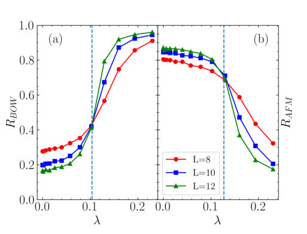
<figcaption class="paper-figure-caption"><b>Fig 1.</b> FIG. 1. Correlation ratios for the (a) BOW and (b) AFM phases for δ = 0.3t, U = 5t, and Ω0 = 0.5t. The critical value of the dimensionless coupling λc in the thermodynamic limit is obtained from the intersection of the interpolated curves for the different lattice sizes L = βt = 8, 10, 12, as indicated by the dashed lines.</figcaption>
</figure>
<figure class="paper-figure-card">
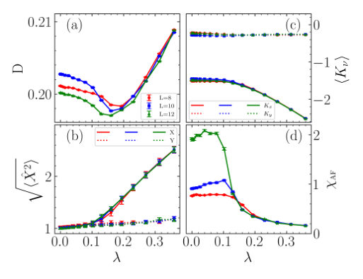
<figcaption class="paper-figure-caption"><b>Fig 2.</b> FIG. 3. Local observables as a function of the e-ph coupling strength for fixed δ = 0.3t, U = 2t, and Ω0 = 0.5t. Results are shown for the average values of (a) the double occupancy D; (b) the root mean square displacements Xrms and Yrms; (c) the direction-resolved kinetic energies Kx and Ky, and the AFM susceptibility χAFM. Results are also shown for different lattice sizes L as indicated by the legend in panel (a). Here, we find that the L dependence is weak, as is often the case for local observables. Panel (d) shows an additional global observable– the AFM susceptibility, χAFM.</figcaption>
</figure>
<figure class="paper-figure-card">
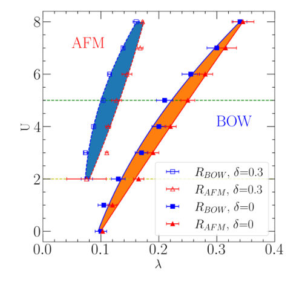
<figcaption class="paper-figure-caption"><b>Fig 3.</b> FIG. 2. Ground state phase diagram of the optical SSHH model at half-filling in the plane of e-ph coupling and on-site repulsion U. Here phonon frequency Ω0 = 0.5t and strain δ = 0.3t. Blue open triangles give the BOW phase boundaries and red open triangles give the AFM phase boundaries. We show results for the unstrained case, δ = 0, (from [58]) for comparison (filled symbols). The shaded regions indicate coexistence. Figures 1 and 3 were obtained using data from the line cuts at U = 5t (green dashed line) and U = 2t (yellow dashed line), respectively.</figcaption>
</figure>
<figure class="paper-figure-card">
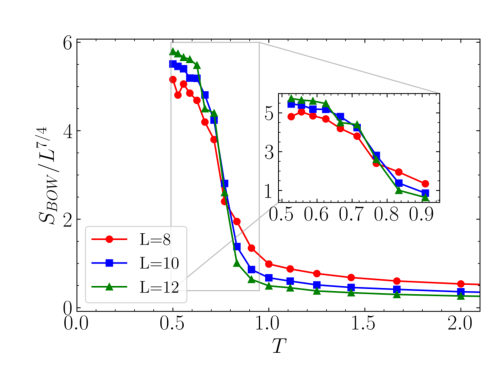
<figcaption class="paper-figure-caption"><b>Fig 4.</b> FIG. 4. Crossing of the rescaled structure factors for the BOW phases for U = 4t, Ω0 = t, and λ = 1 for the strained δ = 0.3t case. We use the exponent ratio γ/ν = 7/4, which is shared by the Ashkin-Teller, four-state-Potts, and Ising universality classes in 2D.</figcaption>
</figure>
<figure class="paper-figure-card">
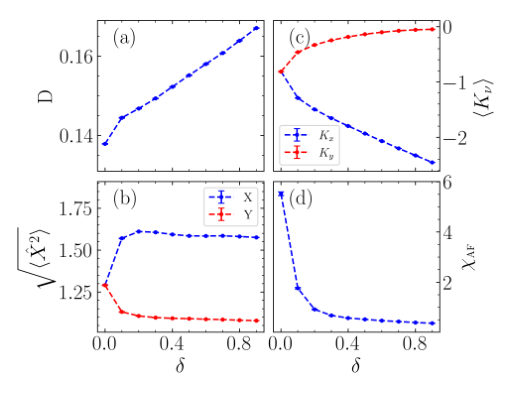
<figcaption class="paper-figure-caption"><b>Fig 5.</b> FIG. 6. D, Kν, p</figcaption>
</figure>
</div>

<p><strong>Summary.</strong> This work models the half-filled SSH-Hubbard system under uniaxial strain to study the competition between Bond-Order-Wave (BOW) and Antiferromagnetic (AFM) phases. Using advanced Quantum Monte Carlo simulations, the authors map the phase diagram and demonstrate that strain significantly influences the stability and characteristics of the resulting electronic order. This provides theoretical insight into strain-tunable correlated electronic phases.</p>
<p><strong>Why it may be interesting.</strong> The combination of electron-phonon coupling, strong correlations (Hubbard $U$), and external tuning (strain) makes this highly relevant for understanding emergent electronic phases in correlated materials.</p>
<details>
<summary>Detailed structure</summary>
<p><strong>Main problem.</strong> The study investigates the interplay between Bond-Order-Wave (BOW) correlations and Antiferromagnetic (AFM) correlations in the half-filled SSH-Hubbard model when subjected to uniaxial strain.</p>
<p><strong>Main result.</strong> Uniaxial strain anisotropically modifies the phase diagram, shifting the competition toward the BOW phase and allowing for the quantification of the BOW transition temperature.</p>
<p><strong>Method.</strong> The research employs Determinant Quantum Monte Carlo (DQMC) simulations combined with Hybrid Monte Carlo (HMC) updates for phonon fields, and uses analytic continuation to analyze spectral properties.</p>
<p><strong>Model / system.</strong> The system is the optical Su-Schrieffer-Heeger-Hubbard (SSHH) model on a 2D square lattice, incorporating electron-phonon coupling ($\lambda$) and on-site Hubbard repulsion ($U$). Strain is modeled via anisotropic hopping, breaking rotational symmetry.</p>
<p><strong>Key observables.</strong> Equilibrium phase diagram (BOW vs. AFM), spectral function showing directionally dependent gap formation, and correlation functions for both BOW and AFM order.</p>
<p><strong>Important parameters / regimes.</strong> Half-filling ($
ho=1$), dimensionless e-ph coupling ($\lambda$), Hubbard coupling ($U$), and the strain parameter ($\delta$).</p>
<p><strong>Assumptions / limitations.</strong> The analysis uses the leading-order expression for electron-phonon coupling and relies on the DQMC method being applicable due to particle-hole symmetry at half-filling.</p>
<p><strong>Figures summary.</strong> The phase diagram maps the competition between AFM and BOW order in the $(\lambda, U)$ plane, showing how strain shifts the boundaries.</p>
<p><strong>Paper structure.</strong> The paper establishes the SSH-Hubbard model with strain, details the DQMC/HMC simulation methodology, maps the phase diagram by varying $\lambda$ and $U$, and finally analyzes spectral properties in the ordered phases.</p>
</details>
<details>
<summary>Abstract</summary>
<p>Strain offers a direct route to control electronic phases by altering bond lengths, hopping amplitudes, and lattice symmetries. These aspects make electron-phonon (e-ph) coupled systems a natural setting to study strain-induced effects. The Su-Schrieffer-Heeger (SSH) Hamiltonian describes the coupling between itinerant electrons and lattice degrees of freedom that modulate hopping and is thus expected to be strongly affected by strain fields. At half-filling and on a bipartite lattice, the SSH interactions drive dominant bond-order-wave (BOW) correlations at low- temperature in which short bonds with high kinetic energy alternate with long bonds with low kinetic energy along four possible patterns. We model uniaxial strain through anisotropic hopping, which breaks the $90^\circ$ rotational symmetry and reduces the BOW phase degeneracy to two. We also include an on-site Hubbard U that promotes antiferromagnetic correlations that are also (weakly) driven by the SSH interaction itself. We map out the half-filled phase diagram in the plane of the e-ph and Hubbard couplings, and determine the critical temperature of BOW formation. Using analytic continuation, we also evaluate the spectral function and demonstrate directionally dependent gap formation in the BOW phase</p>
</details>
<p><sub><a href="#top">↑ back to top</a></sub></p>

<p><a id="paper-2610.01839"></a></p>
<h3 id="toward-optimal-circuit-depth-for-geometrically-local-hamiltonian-simulation"><a href="http://arxiv.org/abs/2610.01839v1">Toward Optimal Circuit Depth for Geometrically Local Hamiltonian Simulation</a></h3>
<p><strong>Authors:</strong> Zhenyu Shen, Yusen Wu, Penghui Yao, Xiao Yuan, Yukun Zhang<br>
<strong>Type:</strong> theory · <strong>Category:</strong> quantum information and computing · <strong>PDF:</strong> <a href="https://arxiv.org/pdf/2610.01839v1">https://arxiv.org/pdf/2610.01839v1</a><br>
<strong>Analysis basis:</strong> full PDF text, analyzed in chunks
<strong>Topic relevance:</strong> <code>analog quantum simulation</code> <strong>3/5</strong></p>
<div class="figure-strip-hint">↔ Scroll figures horizontally</div>
<div class="paper-figures-scroll">
<figure class="paper-figure-card">
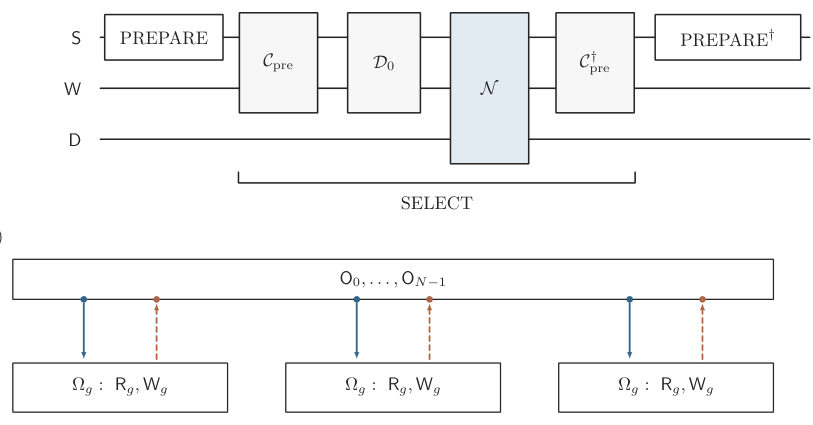
<figcaption class="paper-figure-caption"><b>Fig 1.</b> Figure 1: Block encoding and distribution of its controls. (a) Gates act from left to right. PREPARE creates the labels and phase qubits; Cpre computes prefix values, D0 applies source phases, and N applies local phases and ordered data gates. Temporary distribution work is cleared before the prefix computation and preparation are reversed. The work wire includes both source and geometric ancillas. (b) A basis record is distributed to the shared words Rg, used without changing its control values, and returned for uncomputation. Solid and dashed arrows distinguish forward and return paths on separate qubits. The omitted tree levels and their local connections are specified in Appendix A;...</figcaption>
</figure>
<figure class="paper-figure-card">
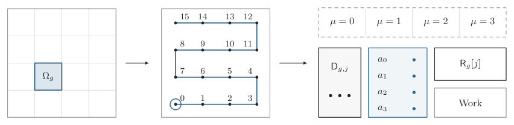
<figcaption class="paper-figure-caption"><b>Fig 2.</b> Figure 2: Addresses and local registers. (a) Each subblock Ωg contains v0 = Θ(w) data sites. (b) A nearest-neighbor snake orders the sites by j; the circled site has j = 0. (c) The dashed table indexes classical triples (cλ, ωλ, Pλ), whereas the dots and solid boxes denote quantum registers. Here qrec = 4, aµ abbreviates ag,qrecj+µ, and Rg[j] is the part of the shared word near data register Dg,j. The selectors and additional work bits together form Wg. The address is λ = gT0 + i, with i = qrecj + µ and T0 = qrecv0. Equation (165) places the distinct qubits at distinct physical sites.</figcaption>
</figure>
<figure class="paper-figure-card">
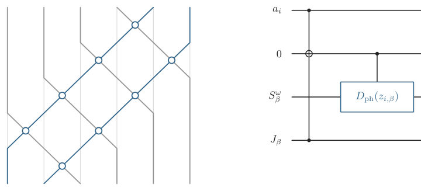
<figcaption class="paper-figure-caption"><b>Fig 3.</b> Figure 3: Local phase operations in a fixed pair-swap network; the subblock index g is suppressed. (a) Four selector pairs Ai = (ai, 0) cross the two phase-field pairs B0 = (Sχ, 0) and B1 = (Sω 0 , J0). Columns denote fixed pair positions and lines track their contents through five rounds. Each circle marks a phase operation immediately before a pair exchange. (b) At a frequency encounter, a Toffoli computes aiJβ into the clean bit; that bit controls Dph(zi,β), and a second Toffoli clears it. Reversing the pair exchanges restores every field while retaining the phases.</figcaption>
</figure>
<figure class="paper-figure-card">
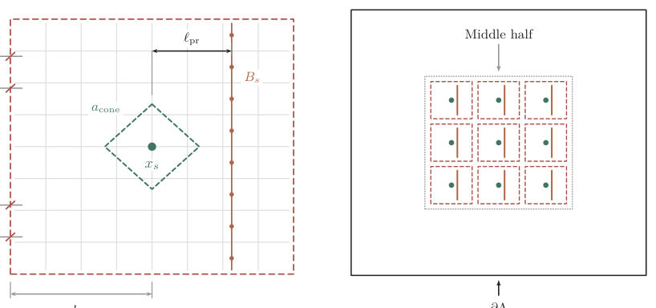
<figcaption class="paper-figure-caption"><b>Fig 4.</b> Figure 4: Propagation probes for the lower bound, illustrated in two dimensions. (a) A source xs is at the center of a cube of radius bpr. The receiver Bs is the transverse slice at displacement ℓpr; the dashed diamond is the circuit causal ball of radius acone &lt; ℓpr. The reference Hamiltonian deletes vxy on every edge crossing a probe boundary and retains the original one-body terms; the marked cuts are examples. (b) Disjoint probes lie in the middle half of the lattice, away from the physical boundary. Their centers form S and their receiver slices form B. The reference output factorizes across probes, and Eq. (144) bounds its difference from the interacting output. The buffer ratio...</figcaption>
</figure>
<figure class="paper-figure-card">
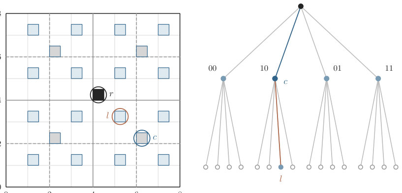
<figcaption class="paper-figure-caption"><b>Fig 5.</b> Figure 5: Dyadic regions and workspaces for D = 2 and K = 2. (a) Coordinates are in units of b after doubling the data coordinates. A level-k region has original side b2k, coarse side 2b2k, and workspace Bν = c(ν) + {0, . . . , b/2 −1}2. Dark, gray, and pale blue squares show levels 2, 1, 0; their workspaces are disjoint across levels. (b) The inclusion tree has child index (k −1, 2m + ϵ), where ϵ ∈{0, 1}2. The labels r, c, l mark the same root, child, and leaf in both panels, at coarse centers (4b, 4b), (6b, 2b), and (5b, 3b). Leaves are subblocks.</figcaption>
</figure>
</div>

<p><strong>Summary.</strong> This paper develops a method to simulate quantum dynamics for local Hamiltonians by decomposing the evolution into short-time steps on small spatial blocks. It achieves an upper bound on the circuit depth that is near-optimal, matching a proven lower bound for specific systems like the XXZ model. This work clarifies the role of spatial locality in determining the computational cost of quantum simulation.</p>
<p><strong>Why it may be interesting.</strong> It provides concrete, near-optimal complexity bounds for simulating lattice Hamiltonians, which is crucial for designing efficient quantum algorithms for many-body physics simulations.</p>
<details>
<summary>Detailed structure</summary>
<p><strong>Main problem.</strong> The paper aims to determine the optimal circuit depth required to simulate the time evolution of interacting quantum systems governed by geometrically local Hamiltonians.</p>
<p><strong>Main result.</strong> The authors establish an upper bound of $O(T \log(nT/\epsilon))$ for circuit depth and prove a lower bound of $\Omega(\log n / \log \log n)$ for uniform XXZ Hamiltonians, showing near-optimality.</p>
<p><strong>Method.</strong> The approach involves decomposing the simulation into short-time evolutions on small, overlapping spatial blocks using Lieb-Robinson bounds and applying advanced product formulas with error compensation.</p>
<p><strong>Model / system.</strong> The system is an $n$-qubit, time-independent, finite-range Hamiltonian ($H$) defined on a fixed-dimensional lattice. The simulation targets the unitary evolution $e^{-iHT}$ to a specified accuracy $\epsilon$.</p>
<p><strong>Key observables.</strong> Circuit depth, gate count, and simulation accuracy ($\epsilon$).</p>
<p><strong>Important parameters / regimes.</strong> Evolution time $T$, number of qubits $n$, lattice dimension $D$, and local interaction strength $J$.</p>
<p><strong>Assumptions / limitations.</strong> The analysis relies on the spatial locality of the Hamiltonian and the ability to decompose the evolution into blocks whose error can be controlled by the block diameter.</p>
<p><strong>Paper structure.</strong> The paper first introduces the problem of simulating local dynamics, then details the construction of the circuit using spatial decomposition and error correction techniques, culminating in the proof of the near-optimal circuit depth bounds by matching upper and lower bounds.</p>
</details>
<details>
<summary>Abstract</summary>
<p>Understanding the dynamics of interacting quantum systems is a central goal of quantum simulation. For geometrically local Hamiltonians, locality suggests that digital simulation should retain much of the parallelism of the underlying dynamics. For a target accuracy $ε$, we construct a nearest-neighbor quantum circuit that simulates the dynamics of an $n$-qubit, time-independent, finite-range Hamiltonian with normalized local interaction strength on a fixed-dimensional lattice for time $T\ge1$, with circuit depth $O(T\log(nT/ε))$ and gate count $O(nT\log(nT/ε))$. This reduces the polylogarithmic overhead of Haah, Hastings, Kothari, and Low to a single logarithm. On logarithmic-scale blocks from the Lieb--Robinson decomposition, a shallow but highly accurate implementation is essential for reducing the circuit depth. Our key observation is that spatial localization also controls the cost of high precision. In each block, the error of a constant-order product formula is compensated for by a correction, yielding exponential accuracy. The correction can be implemented with depth proportional to the block diameter, introducing no additional asymptotic depth scale beyond that required by spatial localization.   Furthermore, we prove an unconditional circuit-depth lower bound for uniform XXZ Hamiltonians: at fixed evolution time $T$ in the stated regime and sufficiently small fixed error $ε$, any nearest-neighbor quantum circuit simulating these dynamics requires depth $Ω(\log n/\log\log n)$. This matches our $O(\log n)$ upper bound up to a doubly logarithmic factor, establishing near-optimal circuit depth for lattice Hamiltonian simulation in this regime. Together, these results clarify the role of locality and precision in determining the circuit complexity of quantum dynamics and suggest broader principles for spatially constrained quantum computation.</p>
</details>
<p><sub><a href="#top">↑ back to top</a></sub></p>

<p><a id="paper-2610.02103"></a></p>
<h3 id="unitary-schur-sampling-of-qudits-via-random-swap-tests-hunt-for-antisymmetry"><a href="http://arxiv.org/abs/2610.02103v1">Unitary Schur Sampling of Qudits via Random SWAP Tests: Hunt for Antisymmetry</a></h3>
<p><strong>Authors:</strong> Shrigyan Brahmachari, David Jakab, Henry D. Pfister, Iman Marvian<br>
<strong>Type:</strong> theory · <strong>Category:</strong> quantum information and computing · <strong>PDF:</strong> <a href="https://arxiv.org/pdf/2610.02103v1">https://arxiv.org/pdf/2610.02103v1</a><br>
<strong>Analysis basis:</strong> full PDF text, analyzed in chunks
<strong>Topic relevance:</strong> <code>quantum measurements</code> <strong>3/5</strong></p>
<div class="figure-strip-hint">↔ Scroll figures horizontally</div>
<div class="paper-figures-scroll">
<figure class="paper-figure-card">
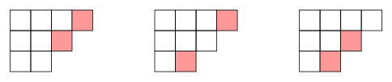
<figcaption class="paper-figure-caption"><b>Fig 1.</b> FIG. 1. The three admissible ways to remove two boxes from λ = (4, 3, 2). The highlighted boxes are removed; no two removed boxes lie in the same row.</figcaption>
</figure>
<figure class="paper-figure-card">
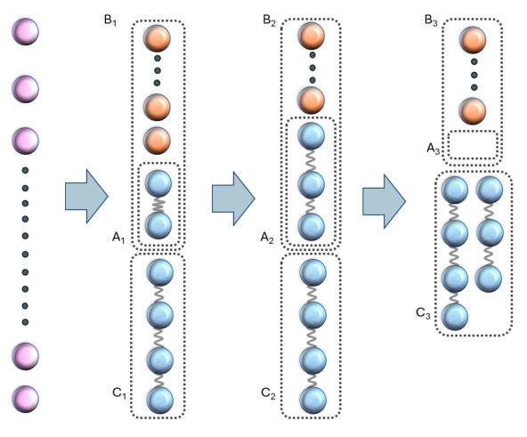
<figcaption class="paper-figure-caption"><b>Fig 2.</b> FIG. 3. Illustration of Algorithm 2. Throughout the protocol, the qudits are partitioned into three registers At, Bt, and Ct, where t denotes the number of measurement rounds performed so far. The register At contains the current candidate antisymmetric subsystem, Bt contains the remaining qudits that have not yet been assigned to an antisymmetric subsystem, and Ct stores the antisymmetric subsystems extracted during previous invocations of the growth subroutine. At each round, a qudit selected uniformly at random from Bt \ At is tested together with the qudits in At using an antisymmetric measurement. Upon a successful projection onto the antisymmetric subspace, the selected qudit is...</figcaption>
</figure>
<figure class="paper-figure-card">
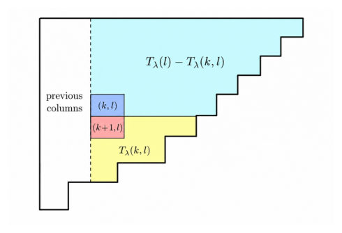
<figcaption class="paper-figure-caption"><b>Fig 3.</b> FIG. 5. Illustration of the Young-diagram traversal process. The white region corresponds to columns that have already been separated by previous invocations of the growth subroutine. The blue square denotes the current state (k, l), while the red square represents the candidate next state (k + 1, l). The yellow region (including (k + 1, l)) contains the Tλ(k, l) boxes contributing to the probability of extending the current antisymmetric subsystem, whereas the cyan region (including (k, l)) contains the remaining Tλ(l) −Tλ(k, l) boxes of the current Young diagram. A successful antisymmetric measurement corresponds to the transition (k, l) →(k + 1, l).</figcaption>
</figure>
</div>

<p><strong>Summary.</strong> This work presents a novel, resource-efficient method to perform Unitary Schur Sampling on multi-qudit systems using only pairwise SWAP tests. By framing the process as a search for antisymmetry, the authors achieve a polynomial scaling in the number of qudits. This provides a powerful, experimentally feasible primitive for accessing deep structural information encoded in quantum many-body states.</p>
<p><strong>Why it may be interesting.</strong> The development of resource-efficient measurement protocols using only basic quantum gates (like SWAP tests) is crucial for building practical quantum information processing devices.</p>
<details>
<summary>Detailed structure</summary>
<p><strong>Main problem.</strong> The paper addresses the challenge of implementing Unitary Schur Sampling (USS) for extracting permutation-invariant information from multi-qudit quantum states.</p>
<p><strong>Main result.</strong> USS can be realized efficiently using only pairwise SWAP tests, framing the process as a stochastic search for antisymmetry within the system's state space.</p>
<p><strong>Method.</strong> The core method involves exploiting Schur-Weyl duality and repeatedly identifying and extracting the largest antisymmetric subsystem using controlled SWAP tests.</p>
<p><strong>Model / system.</strong> The system consists of $n$ qudits, each of dimension $d$, whose total Hilbert space decomposes according to Schur-Weyl duality into sectors labeled by Young diagrams $\lambda$.</p>
<p><strong>Key observables.</strong> The primary observables are the Young-diagram label $\lambda$ and the corresponding reduced state on the $   ext{SU}(d)$ irrep subsystem $Q_d^\lambda$.</p>
<p><strong>Important parameters / regimes.</strong> The complexity scales polynomially with $n$ and $d$, achieving error $\epsilon$ in diamond distance with $O(n\min\{n, d\}^3/\epsilon \log^2 n)$ tests.</p>
<p><strong>Assumptions / limitations.</strong> The protocol relies on approximating the full antisymmetric measurement and assumes the existence of a canonical pure state structure within the multiplicity subsystem.</p>
<p><strong>Figures summary.</strong> TABLE I compares the complexity of different USS implementations, highlighting the efficiency of the proposed SWAP-test method.</p>
<p><strong>Paper structure.</strong> The paper first introduces USS, contrasting it with existing complex methods. It then details the SWAP-test based approach by exploiting antisymmetry, developing algorithms, and finally applying the technique to Quantum Purity Amplification (QPA).</p>
</details>
<details>
<summary>Abstract</summary>
<p>Schur sampling is a fundamental primitive for extracting permutation-invariant information from many-body quantum systems and has broad applications in quantum information science. Circuit-based implementations typically rely on coherent representation-theoretic operations such as Clebsch-Gordan transforms, generalized phase estimation, or quantum Fourier transforms over the symmetric group. We show that unitary Schur sampling of arbitrary permutation-invariant mixed states on $n$ $d$-dimensional qudits can instead be implemented using only pairwise SWAP tests, namely, two-qudit projective measurements onto the symmetric and antisymmetric subspaces. Our protocol achieves error $ε$ in diamond distance using $O(n\min\{n,d\}^{3}\log^2(n/ε))$ random SWAP tests. The central idea is to repeatedly identify and extract the largest antisymmetric subsystem. This turns unitary Schur sampling into a search for antisymmetry and gives the algorithm a natural interpretation as a stochastic traversal of a Young diagram. The protocol preserves the $\mathrm{SU}(d)$-irrep state while preparing a canonical pure state in the multiplicity subsystem. As an application, we consider quantum purity amplification (QPA), in which multiple noisy copies of a pure quantum state are combined to produce a state of higher purity. We show that the optimal purified state can be obtained by retaining a single designated output qudit and discarding the rest.</p>
</details>
<p><sub><a href="#top">↑ back to top</a></sub></p>

<p><a id="paper-2610.01594"></a></p>
<h3 id="mass-asymmetry-controlled-exciton-dressing-and-dissociation-in-a-quantum-lattice-model"><a href="http://arxiv.org/abs/2610.01594v1">Mass-asymmetry-controlled exciton dressing and dissociation in a quantum lattice model</a></h3>
<p><strong>Authors:</strong> Michael O. Atambo<br>
<strong>Type:</strong> theory · <strong>Category:</strong> strongly correlated electrons · <strong>PDF:</strong> <a href="https://arxiv.org/pdf/2610.01594v1">https://arxiv.org/pdf/2610.01594v1</a><br>
<strong>Analysis basis:</strong> full PDF text, analyzed in chunks
<strong>Topic relevance:</strong> <code>analog quantum simulation</code> <strong>2/5</strong> · <code>Frenkel-Kontorova</code> <strong>1/5</strong> · <code>Keldysh / 2PI / non-Gaussian methods</code> <strong>1/5</strong> · <code>correlated / nonlocal dissipation</code> <strong>1/5</strong> · <code>driven-dissipative phase transition</code> <strong>1/5</strong> · <code>methods for driven-dissipative</code> <strong>1/5</strong></p>
<div class="figure-strip-hint">↔ Scroll figures horizontally</div>
<div class="paper-figures-scroll">
<figure class="paper-figure-card">
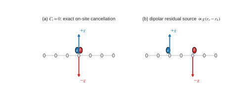
<figcaption class="paper-figure-caption"><b>Fig 1.</b> FIG. 1. Phonon source and exchange symmetry. (a) For a coincident electron-hole pair, the neutral source Ci = g(δi,re −δi,rh) vanishes site by site and is strictly odd under the electron-hole exchange operator Peh. (b) For separated carriers, a dipolar residual source remains. The odd parity of the neutral source, combined with the symmetric ground state at equal masses, enforces an exact exchange selection rule that suppresses phonon dressing.</figcaption>
</figure>
<figure class="paper-figure-card">
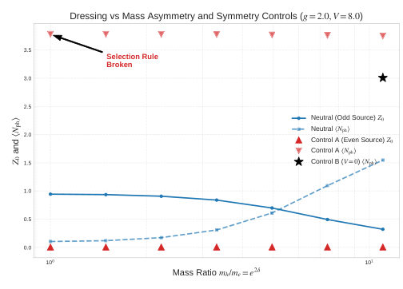
<figcaption class="paper-figure-caption"><b>Fig 2.</b> FIG. 2. Mass-asymmetry-controlled dressing and symmetry controls at g = 2.0, V = 8.0. Main curves: Evolution of the zero-phonon character Z0 and total phonon number ⟨Nph⟩as the mass ratio mh/me = e2δ increases. The δ- parameterization holds the geometric mean of hoppings con- stant, isolating the symmetry effect from the small-polaron atomic limit. The symmetric exciton (δ = 0) is protected by the exchange selection rule. Control A (Even Source): Reversing the hole coupling sign (gh = −g) renders the source even under Peh, explicitly breaking the selection rule and causing heavy local polaronic dressing (⟨Nph⟩≈3.8) even at perfect mass symmetry, consistent with the relative-sign physics...</figcaption>
</figure>
<figure class="paper-figure-card">
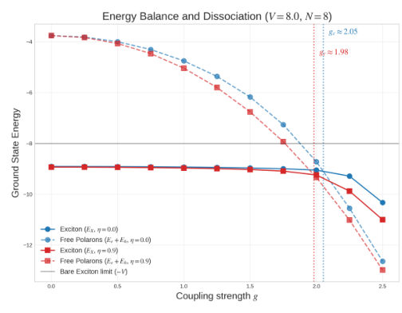
<figcaption class="paper-figure-caption"><b>Fig 3.</b> FIG. 3. Energy-balance construction for the dissociation boundary at V = 8. The exciton ground-state energy (solid) is compared to the sum of the independently converged free- polaron energies (dashed). The protected exciton remains remarkably flat, harvesting almost no polaronic stabilization, leading to a finite-size level crossing at gc ≈2.05 that is con- sistent with a dissociation transition in the thermodynamic limit. The crossing location is largely independent of the in- ternal dressing state.</figcaption>
</figure>
<figure class="paper-figure-card">
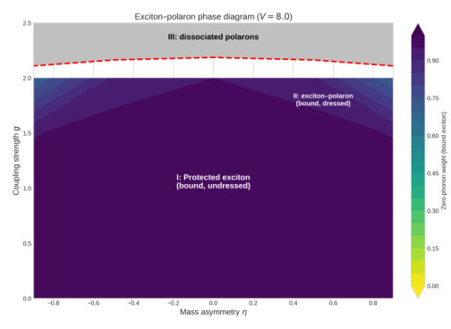
<figcaption class="paper-figure-caption"><b>Fig 4.</b> FIG. 4. Exciton-polaron regime map at V = 8: zero- phonon character Z0 in the bound region (color), the dis- sociated region (gray), and the Ebind = 0 boundary (red dashed). The map highlights the separation of energy scales: mass asymmetry η controls the internal dressing crossover (Regime I to II), while the global energetic competition be- tween Coulomb binding and polaronic stabilization sets the nearly η-independent dissociation boundary (Regime III).</figcaption>
</figure>
<figure class="paper-figure-card">
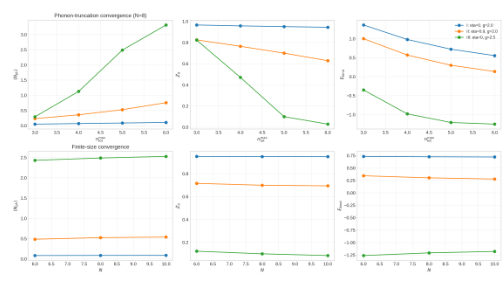
<figcaption class="paper-figure-caption"><b>Fig 5.</b> FIG. 5. Convergence analysis: phonon-truncation sweep at N = 8 (top) and finite-size sweep at ntot = 5 (bottom) for the three representative points. The two-tier reference protocol (converging free polarons to ntot = 10) ensures the binding energies and regime boundaries are robust; see Appendix A.</figcaption>
</figure>
</div>

<p><strong>Summary.</strong> This theoretical work analyzes how mass asymmetry controls the interaction between excitons and phonons in polar semiconductors. It reveals a paradox where the symmetry protecting the exciton from phonon dressing simultaneously removes the energy stabilization it needs, causing it to dissociate at strong coupling. The findings map out distinct regimes governed by internal dressing versus global energy balance.</p>
<p><strong>Why it may be interesting.</strong> The interplay between symmetry protection (a quantum selection rule) and thermodynamic stability (energy balance) is a rich topic relevant to understanding charge transfer and localization in many correlated materials.</p>
<details>
<summary>Detailed structure</summary>
<p><strong>Main problem.</strong> The paper investigates the non-perturbative fate of exciton-phonon coupling, specifically analyzing the interplay between internal exciton dressing and the thermodynamic stability (dissociation) of the exciton in a polar material.</p>
<p><strong>Main result.</strong> Mass symmetry protects the exciton from phonon dressing via an exchange selection rule, but this same symmetry prevents polaronic stabilization, leading to dissociation at strong coupling. Increasing mass asymmetry breaks this protection, causing strong dressing.</p>
<p><strong>Method.</strong> The study employs exact diagonalization of a Holstein-exciton model, utilizing parameterization of hopping terms to control mass asymmetry, and comparing the exciton energy to the sum of free-polaron energies.</p>
<p><strong>Model / system.</strong> The system is a neutral exciton coupled to local Einstein phonons in a quantum lattice model (1D chain). The Hamiltonian includes kinetic, Coulomb attraction, and electron-phonon coupling terms.</p>
<p><strong>Key observables.</strong> Zero-phonon weight ($Z_0$), total phonon number ($\langle N_{ph} 
angle$), exciton binding energy ($E_{bind}$), and the dissociation estimate ($g_c$).</p>
<p><strong>Important parameters / regimes.</strong> Mass asymmetry ($\delta$ or $\eta$), phonon coupling strength ($g$), and Coulomb interaction strength ($V$).</p>
<p><strong>Assumptions / limitations.</strong> The analysis assumes the source parity is key to the selection rule, and the dissociation boundary is determined by a global energy balance between Coulomb binding and polaronic stabilization.</p>
<p><strong>Figures summary.</strong> Figures illustrate the crossover in $Z_0$ and $\langle N_{ph} 
angle$ as mass asymmetry increases, show the energy level crossing defining the dissociation boundary, and present a regime map separating internal dressing effects from global energy balance.</p>
<p><strong>Paper structure.</strong> The paper establishes the model and the role of source parity in protecting the exciton at mass symmetry. It then maps the crossover regime controlled by mass asymmetry, and finally determines the dissociation boundary via an energy balance comparison.</p>
</details>
<details>
<summary>Abstract</summary>
<p>In a polar material, a neutral exciton couples to phonons through the sum of the electron and hole deformation potentials. Because the total source vanishes by charge neutrality, the elastic exciton-phonon vertex is regularized by electron-hole interference. Here we determine the non-perturbative fate of this interference by exact diagonalization of a Holstein-exciton model. By parameterizing the mass asymmetry to decouple it from the small-polaron atomic limit, we map a regime map comprising an internal dressing crossover and a dissociation boundary. We prove analytically and verify numerically that for equal masses, the symmetric exciton ground state is protected from phonon dressing by an exact exchange selection rule, provided the phonon source is odd under electron-hole exchange (the neutral case). As mass asymmetry increases, this selection rule is broken and the exciton acquires a strong local polaronic cloud. We show that the dissociation boundary, conversely, is set by a global energy balance between Coulomb binding and polaronic stabilization, and is nearly independent of the internal dressing. Paradoxically, the very symmetry that protects the exciton from dressing denies it polaronic stabilization, driving it toward dissociation at strong coupling. We discuss these results in the context of lattice exciton-polaron models and their implications for sharp versus broad excitonic lines in mass-symmetric versus mass-asymmetric polar semiconductors.</p>
</details>
<p><sub><a href="#top">↑ back to top</a></sub></p>

<p><a id="paper-2610.00844"></a></p>
<h3 id="complexity-study-of-the-hartle-hawking-state-in-jt-gravity"><a href="http://arxiv.org/abs/2610.00844v1">Complexity study of the Hartle-Hawking state in JT gravity</a></h3>
<p><strong>Authors:</strong> Ritam Basu<br>
<strong>Type:</strong> theory · <strong>Category:</strong> other · <strong>PDF:</strong> <a href="https://arxiv.org/pdf/2610.00844v1">https://arxiv.org/pdf/2610.00844v1</a><br>
<strong>Analysis basis:</strong> full PDF text, analyzed in chunks
<strong>Topic relevance:</strong> <code>Keldysh / 2PI / non-Gaussian methods</code> <strong>2/5</strong> · <code>methods for driven-dissipative</code> <strong>2/5</strong> · <code>quantum measurements</code> <strong>2/5</strong></p>
<div class="figure-strip-hint">↔ Scroll figures horizontally</div>
<div class="paper-figures-scroll">
<figure class="paper-figure-card">
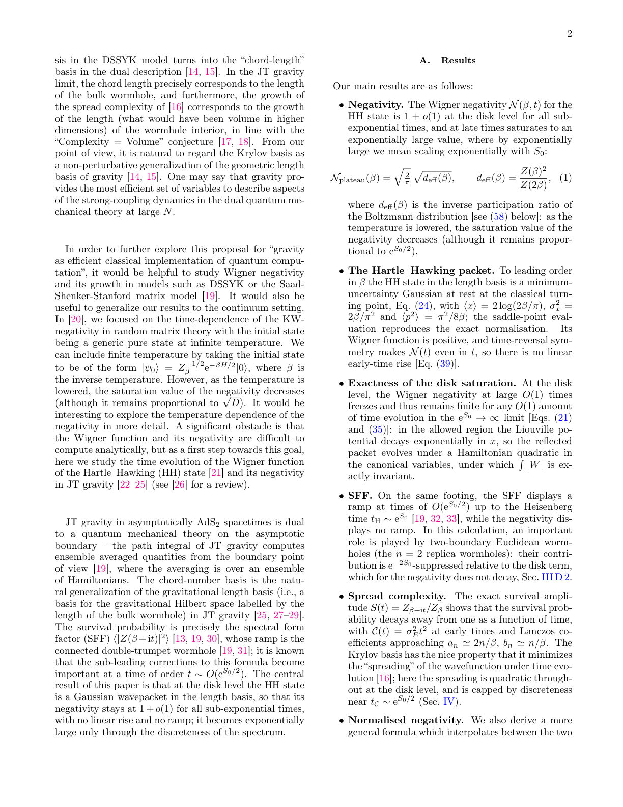
<figcaption class="paper-figure-caption"><b>Fig 1.</b> Low-resolution page preview, page 2</figcaption>
</figure>
<figure class="paper-figure-card">
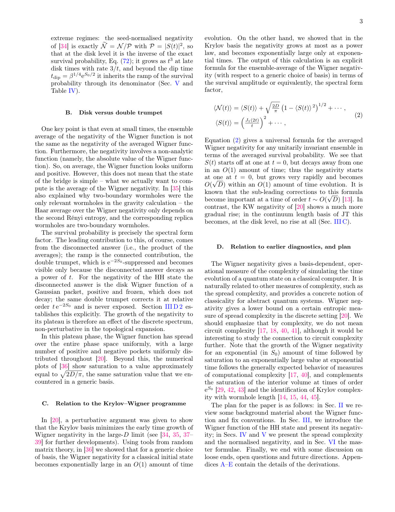
<figcaption class="paper-figure-caption"><b>Fig 2.</b> Low-resolution page preview, page 3</figcaption>
</figure>
<figure class="paper-figure-card">
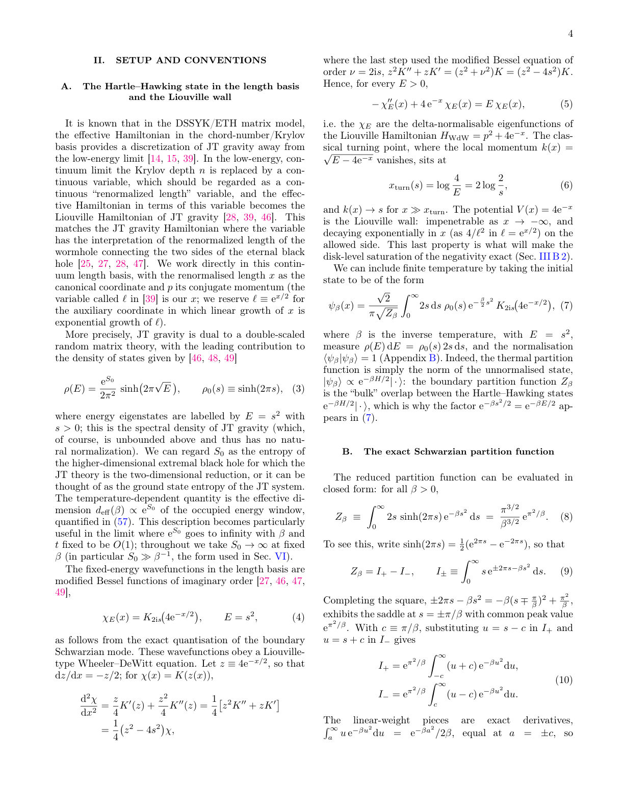
<figcaption class="paper-figure-caption"><b>Fig 3.</b> Low-resolution page preview, page 4</figcaption>
</figure>
<figure class="paper-figure-card">
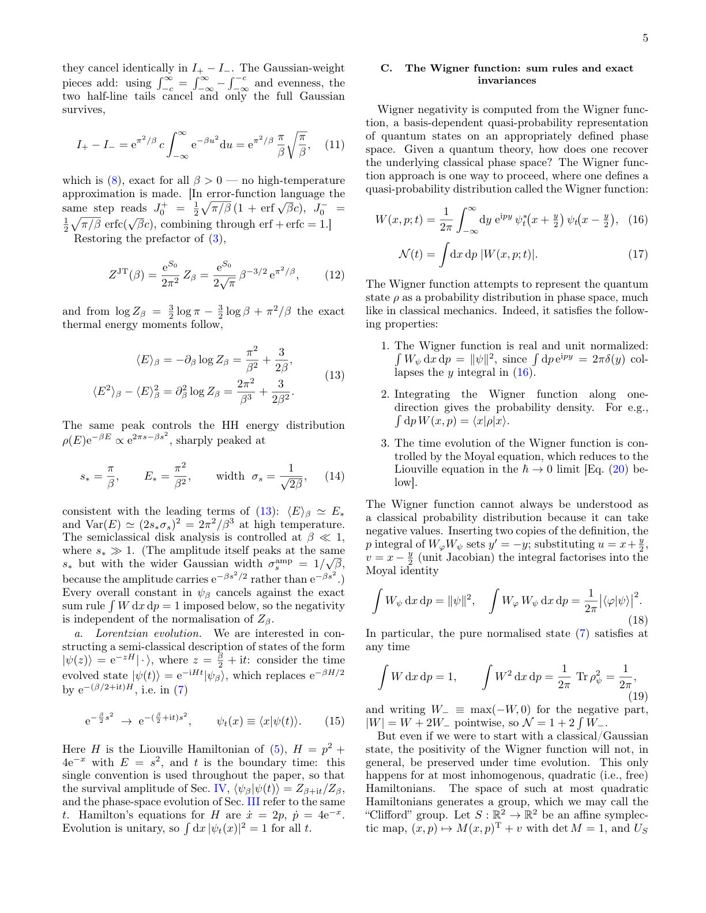
<figcaption class="paper-figure-caption"><b>Fig 4.</b> Low-resolution page preview, page 5</figcaption>
</figure>
<figure class="paper-figure-card">
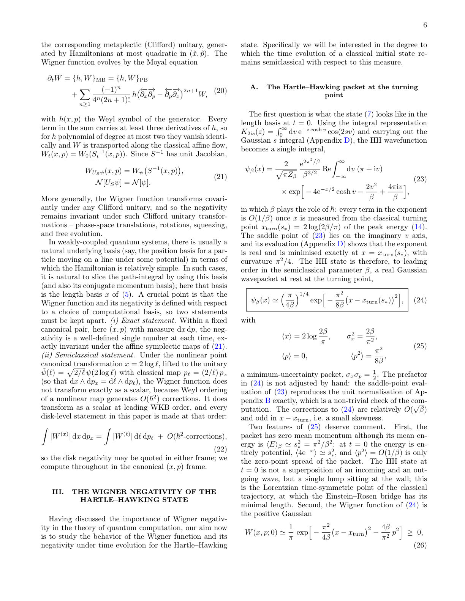
<figcaption class="paper-figure-caption"><b>Fig 5.</b> Low-resolution page preview, page 6</figcaption>
</figure>
</div>

<p><strong>Summary.</strong> This work investigates quantum complexity by tracking the negativity of the Wigner function for the Hartle-Hawking state evolving in JT gravity. The authors find that this negativity saturates at late times and demonstrate that the length basis provides a powerful, semi-classical tool for understanding chaotic quantum dynamics in this gravitational context.</p>
<p><strong>Why it may be interesting.</strong> The connection between quantum complexity measures (like negativity) and gravitational physics (JT gravity) provides a deep link between quantum information theory and quantum gravity, which is highly relevant to open quantum systems dynamics.</p>
<details>
<summary>Detailed structure</summary>
<p><strong>Main problem.</strong> The paper studies the growth of Wigner function negativity as an operational measure of quantum state complexity during time evolution in Jackiw-Teitelboim (JT) gravity.</p>
<p><strong>Main result.</strong> The negativity saturates at late times to a value dependent on the effective dimension, and the length basis is shown to be ideally suited for describing chaotic quantum dynamics semi-classically.</p>
<p><strong>Method.</strong> The analysis uses the Wigner function formalism in the length basis, comparing the growth of negativity to the Spectral Form Factor and employing semiclassical approximations.</p>
<p><strong>Model / system.</strong> The system is the Hartle-Hawking (HH) state evolving under time evolution governed by the Liouville Hamiltonian in JT gravity. The analysis is performed in the continuum length basis.</p>
<p><strong>Key observables.</strong> Wigner Negativity, Spread complexity, Exact survival amplitude, and the thermal partition function $Z_eta$.</p>
<p><strong>Important parameters / regimes.</strong> The semiclassical parameter $\beta$, the action $S_0$, and time $t$ are key parameters governing the complexity growth.</p>
<p><strong>Assumptions / limitations.</strong> The analysis relies on the length basis being suitable for a dual, semi-classical effective description, and involves approximations like saddle-point methods and leading-order expansions.</p>
<p><strong>Figures summary.</strong> Not specified (The notes do not describe figures, only mathematical results and comparisons).</p>
<p><strong>Paper structure.</strong> The paper progresses by defining the complexity measure (negativity), applying it to the HH state in JT gravity, deriving relationships between negativity and survival probability, and finally establishing the suitability of the length basis for semi-classical description.</p>
</details>
<details>
<summary>Abstract</summary>
<p>The negativity of the Wigner function gives an operationally meaningful measure of the complexity of simulating a quantum state on a classical computer. We study its growth for the Hartle-Hawking state under time evolution in Jackiw-Teitelboim gravity, in the length basis. At the disk level, and to leading order in the semiclassical parameter $β$, the Hartle-Hawking state is a minimum-uncertainty Gaussian wavepacket at rest at the turning point of the Liouville wall, centred at $x=2\log(2β/π)$ with $\langle p^2\rangle=π^2/8β$. Its Wigner function is positive, so its negativity is $1+o(1)$ for all sub-exponential times; it is even in $t$ by time-reversal symmetry, and exactly frozen once the reflected packet decouples from the wall, because free evolution is a Clifford shear. At late times the negativity saturates close to its upper bound, at $\sqrt{2/π}\sqrt{d_{\rm eff}(β)}$ with $d_{\rm eff}(β)=Z(β)^2/Z(2β)$, a value that requires the discrete spectrum. Unlike the spectral form factor, the negativity displays no ramp: the two-boundary wormhole contribution is suppressed by $e^{-2S_0}$ relative to a disk term that, unlike that of the spectral form factor, does not decay. The exact survival amplitude $Z(β+it)/Z(β)$ gives the spread complexity growing as $σ_E^2t^2$, and the seed-normalised negativity is, at the disk level, the inverse of the exact survival probability. We take this as evidence that the length basis is ideally suited for a dual, semi-classical effective description of chaotic quantum dynamics for large $e^{S_0}$ at sub-exponential times.</p>
</details>
<p><sub><a href="#top">↑ back to top</a></sub></p>

<p><a id="paper-2610.00901"></a></p>
<h3 id="convergence-of-stationary-distributions-for-a-class-of-zero-range-processes-and-its-application-to-a-wealth-distribution-model-with-debt"><a href="http://arxiv.org/abs/2610.00901v1">Convergence of stationary distributions for a class of zero-range processes and its application to a wealth distribution model with debt</a></h3>
<p><strong>Authors:</strong> Hironobu Sakagawa<br>
<strong>Type:</strong> theory · <strong>Category:</strong> statistical mechanics · <strong>PDF:</strong> <a href="https://arxiv.org/pdf/2610.00901v1">https://arxiv.org/pdf/2610.00901v1</a><br>
<strong>Analysis basis:</strong> full PDF text, analyzed in chunks
<strong>Topic relevance:</strong> <code>non-equilibrium universality</code> <strong>2/5</strong> · <code>Keldysh / 2PI / non-Gaussian methods</code> <strong>1/5</strong> · <code>analog quantum simulation</code> <strong>1/5</strong> · <code>driven-dissipative phase transition</code> <strong>1/5</strong> · <code>methods for driven-dissipative</code> <strong>1/5</strong></p>
<div class="figure-strip-hint">↔ Scroll figures horizontally</div>
<div class="paper-figures-scroll">
<figure class="paper-figure-card">
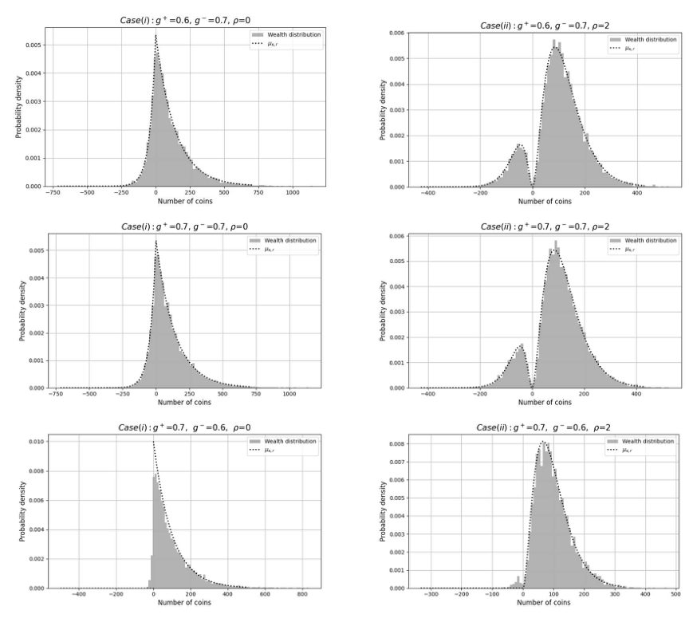
<figcaption class="paper-figure-caption"><b>Fig 1.</b> Figure 1: Simulation results for a single realization of the Markov chain {Xn}n≥0. The left and right columns show the simulation results for Case (i) and Case (ii), respectively. From top to bottom, the values of (g+, g−) are (0.6, 0.7), (0.7, 0.7), and (0.7, 0.6). The gray histograms represent the wealth distribution, i.e. the proportion of agents holding a specific number of coins or a specific amount of debt after n = 109</figcaption>
</figure>
</div>

<p><strong>Summary.</strong> This paper provides a rigorous mathematical framework for understanding wealth distribution in economies with debt by modeling it as a zero-range process. It proves that the stationary state converges to a predictable Gamma-type distribution, determined by the underlying transaction rules. This bridges statistical mechanics theory with complex economic modeling.</p>
<p><strong>Why it may be interesting.</strong> While focused on econophysics, the mathematical machinery—analyzing convergence in the thermodynamic limit for interacting particle systems (zero-range processes)—is highly relevant to non-equilibrium statistical mechanics and the study of interacting quantum many-body systems.</p>
<details>
<summary>Detailed structure</summary>
<p><strong>Main problem.</strong> The paper addresses how macroscopic wealth distributions and economic inequality emerge from microscopic, stochastic transaction rules, particularly when debt is allowed.</p>
<p><strong>Main result.</strong> The stationary wealth distribution converges to either a two-sided Gamma distribution or a standard Gamma distribution, depending on the asymptotic behavior of the coin transfer function.</p>
<p><strong>Method.</strong> The analysis uses techniques from the theory of zero-range processes, involving the study of stationary measures, local limit theorems, and convergence in the thermodynamic limit.</p>
<p><strong>Model / system.</strong> The model is an agent-based system of wealth exchange formulated as a zero-range process on a lattice, generalized to allow negative site occupation numbers to represent debt, constrained by a central bank's total debt limit.</p>
<p><strong>Key observables.</strong> The stationary wealth distribution $\mu_{K,L}^N(\xi)$, and its scaled limit $\mu_{\kappa,r}$.</p>
<p><strong>Important parameters / regimes.</strong> Total wealth ($K$), total debt limit ($L$), the function governing coin transfers ($g(k)$), and the scaling parameters ($\kappa, r$).</p>
<p><strong>Assumptions / limitations.</strong> The process is assumed to be irreducible and the transition probability must be symmetric; convergence relies on specific asymptotic conditions on $g(k)$.</p>
<p><strong>Figures summary.</strong> Figure 1 numerically compares simulated wealth distributions to the derived theoretical density $\mu_{\kappa,r}$ for two distinct cases determined by the relationship between $g_+$ and $g_-$.</p>
<p><strong>Paper structure.</strong> The paper first establishes the existence of the stationary distribution for the zero-range process with debt. It then proceeds to prove the convergence of this distribution in the thermodynamic limit ($N 	o \infty$) using advanced limit theorems, culminating in the identification of the limiting Gamma distributions.</p>
</details>
<details>
<summary>Abstract</summary>
<p>Understanding how macroscopic wealth distributions emerge from microscopic transaction rules among agents is a central problem in econophysics. While many traditional models restrict agents' wealth to non-negative values, debt is an essential feature of realistic economic systems. In this paper, we introduce a stochastic transaction mechanism into the agent-based model with a central-bank-mediated collective debt limit, as studied in [14]. In our model, each agent probabilistically determines whether to transfer a coin, depending on their current asset or debt level. From a probabilistic perspective, the resulting system can be formulated as a zero-range process with $\mathbb{Z}$-valued site occupation numbers, where negative values represent debt. We prove that, under an appropriate scaling, the wealth distribution in the stationary state converges to either a two-sided Gamma distribution or a Gamma distribution, depending on the asymptotic behavior of the function governing coin transfers. Our results rigorously identify these previously unconsidered limiting distributions and provide a mathematical framework for understanding how stochastic monetary exchanges give rise to macroscopic wealth distributions.</p>
</details>
<p><sub><a href="#top">↑ back to top</a></sub></p>

<p><a id="paper-2610.01287"></a></p>
<h3 id="ideal-gas-of-active-particles-in-a-box"><a href="http://arxiv.org/abs/2610.01287v1">Ideal gas of active particles in a box</a></h3>
<p><strong>Authors:</strong> Siran Li, Ralf Eichhorn, Lennart Dabelow<br>
<strong>Type:</strong> theory · <strong>Category:</strong> statistical mechanics · <strong>PDF:</strong> <a href="https://arxiv.org/pdf/2610.01287v1">https://arxiv.org/pdf/2610.01287v1</a><br>
<strong>Analysis basis:</strong> full PDF text, analyzed in chunks
<strong>Topic relevance:</strong> <code>Keldysh / 2PI / non-Gaussian methods</code> <strong>2/5</strong> · <code>analog quantum simulation</code> <strong>1/5</strong> · <code>driven-dissipative phase transition</code> <strong>1/5</strong> · <code>methods for driven-dissipative</code> <strong>1/5</strong> · <code>non-equilibrium universality</code> <strong>1/5</strong></p>
<div class="figure-strip-hint">↔ Scroll figures horizontally</div>
<div class="paper-figures-scroll">
<figure class="paper-figure-card">
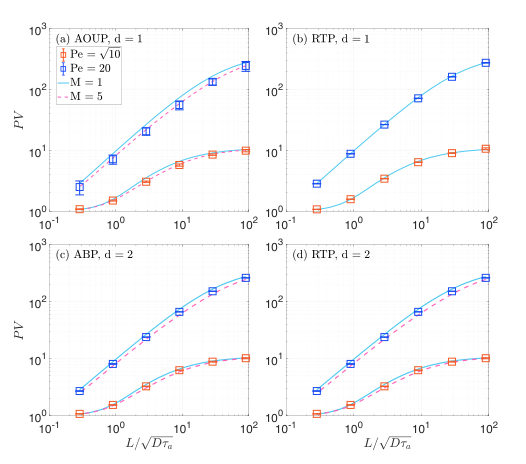
<figcaption class="paper-figure-caption"><b>Fig 1.</b> FIG. 2. Numerical verification of the ideal active gas law for different active particle models, system sizes, and activ- ities. Models and parameters in panels (a) to (d) are as in Fig. 1, see also legend. Symbols show the numerically evalu- ated product PV following Eq. (12), i.e., the correlator ⟨x·v⟩ was calculated from simulations. Solid lines correspond to the theoretical prediction from the right-hand side of Eq. (1), i.e., the exact result for RTPs in d = 1 and the M = 1 approx- imation for AOUPs. Dashed lines correspond to the M = 5 approximation.</figcaption>
</figure>
<figure class="paper-figure-card">
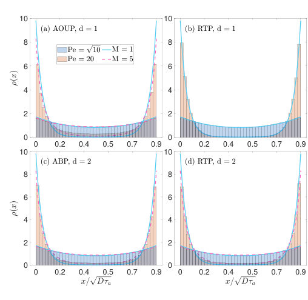
<figcaption class="paper-figure-caption"><b>Fig 2.</b> FIG. 1. Marginal position distributions of various active par- ticle models in a box of size L/√Dτa = 0.9 for different P´eclet numbers Pe as indicated in the legend. Histograms are ob- tained from numerical simulations using 5 × 105 steady-state position samples from 104 independent trajectories. Lines are theory curves ρ(x) = X0(x) [cf. Eq. (9)] for different trunca- tion orders M (see legend). (a) AOUP in d = 1. (b) RTP in d = 1, the theory curve for M = 1 [Eq. (11)] is exact. (c) ABP in d = 2. (d) RTP in d = 2. In (c) and (d), the marginal distributions of a single coordinate (x1) are shown.</figcaption>
</figure>
<figure class="paper-figure-card">
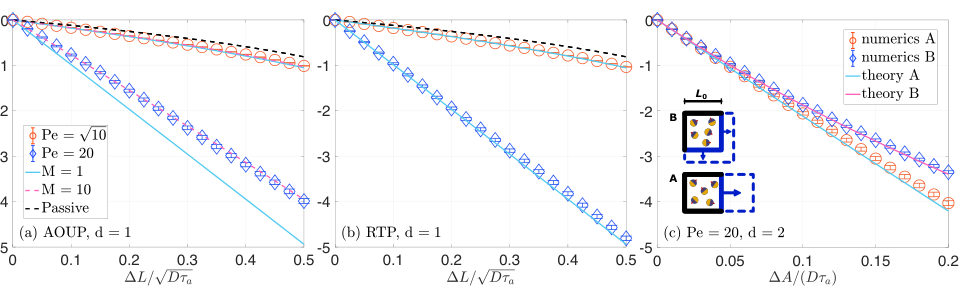
<figcaption class="paper-figure-caption"><b>Fig 3.</b> FIG. 3. Work generated during expansion processes of ideal active gases. (a) AOUPs in d = 1, linear expansion from Li = 0.4 to Lf = Li +∆L. The total expansion time for the largest shown volume change ∆L/√Dτa = 0.5 is τ = 70τa for Pe = √</figcaption>
</figure>
</div>

<p><strong>Summary.</strong> This work derives a generalized ideal gas law for active matter, extending classical thermodynamics to non-equilibrium systems. By analyzing various models like AOUPs and RTPs, the authors establish a relationship between pressure, volume, and activity parameters. This provides a powerful macroscopic tool for studying active systems without needing full microscopic trajectory simulations.</p>
<p><strong>Why it may be interesting.</strong> While focused on classical active matter, the rigorous derivation of a generalized 'equation of state' (the active gas law) using non-equilibrium statistical mechanics techniques is highly relevant to understanding effective Hamiltonians or effective temperatures in open quantum systems.</p>
<details>
<summary>Detailed structure</summary>
<p><strong>Main problem.</strong> The paper aims to extend fundamental thermodynamic concepts, specifically the ideal gas law, to the non-equilibrium regime of active matter.</p>
<p><strong>Main result.</strong> They derive an exact ideal active gas law, $PV = Nk_BT \left( 1 + Pe^2 rac{\vartheta}{1 + Pe^2} 
ight)$, which applies to multiple models of active particles.</p>
<p><strong>Method.</strong> The derivation involves solving the steady-state Fokker-Planck equation for active Ornstein-Uhlenbeck particles via Hermite function expansions and calculating the pressure using the virial theorem.</p>
<p><strong>Model / system.</strong> The system is an ideal gas of noninteracting active particles (AOUPs, RTPs, ABPs) confined within a finite rectangular box. The dynamics are governed by overdamped Langevin equations.</p>
<p><strong>Key observables.</strong> Pressure ($P$), Work ($W$), Marginal position distribution ($
ho(x)$), and the correlation function $\langle \mathbf{x} \cdot \mathbf{v} 
angle$.</p>
<p><strong>Important parameters / regimes.</strong> Péclet Number ($Pe$), characteristic length scale ($\ell$), and system dimensions ($L_1, \dots, L_d$).</p>
<p><strong>Assumptions / limitations.</strong> The analysis relies on the assumption of stationarity and is derived for non-interacting particles, neglecting complex interactions or hydrodynamic effects.</p>
<p><strong>Figures summary.</strong> Figures illustrate the marginal position distributions for different particle types and compare theoretical predictions for the ideal active gas law and the work done during volume expansion protocols.</p>
<p><strong>Paper structure.</strong> The paper systematically derives the ideal active gas law using analytical expansions for AOUPs, confirms its exactness for RTPs in 1D, and then applies this framework to analyze thermodynamic processes like work extraction during volume changes.</p>
</details>
<details>
<summary>Abstract</summary>
<p>Extending a fundamental concept of thermodynamics to the nonequilibrium realm of active matter, we derive an ideal gas law for a suspension of noninteracting active particles confined to a finite rectangular box. The law is exact for run-and-tumble particles (RTPs) in one dimension and established by a systematic analytical expansion of the steady-state probability density for active Ornstein-Uhlenbeck particles in any dimension. It also agrees well with numerical results for active Brownian particles and RTPs in higher dimensions and recovers previously known relations for the limit of large system sizes. Together, these results demonstrate the applicability of the ideal active gas law to the three most widely studied theoretical models of colloidal active matter. As an application, we analyze thermodynamic processes involving active matter on a macroscopic level, without recourse to microscopic particle trajectories or self-propulsion fluctuations.</p>
</details>
<p><sub><a href="#top">↑ back to top</a></sub></p>

<p><a id="paper-2610.01417"></a></p>
<h3 id="optimal-initial-states-for-quantum-fisher-information-in-linearized-cavity-optomechanics"><a href="http://arxiv.org/abs/2610.01417v1">Optimal initial states for quantum Fisher information in linearized cavity optomechanics</a></h3>
<p><strong>Authors:</strong> Wangjun Lu, Qing Yu, Ying Li, Cuilu Zhai, Rui Zhang, Zhao-Hui Peng, Shiqing Tang<br>
<strong>Type:</strong> theory · <strong>Category:</strong> other · <strong>PDF:</strong> <a href="https://arxiv.org/pdf/2610.01417v1">https://arxiv.org/pdf/2610.01417v1</a><br>
<strong>Analysis basis:</strong> full PDF text, analyzed in chunks
<strong>Topic relevance:</strong> <code>quantum measurements</code> <strong>2/5</strong> · <code>analog quantum simulation</code> <strong>1/5</strong> · <code>correlated / nonlocal dissipation</code> <strong>1/5</strong> · <code>driven-dissipative phase transition</code> <strong>1/5</strong></p>
<div class="figure-strip-hint">↔ Scroll figures horizontally</div>
<div class="paper-figures-scroll">
<figure class="paper-figure-card">
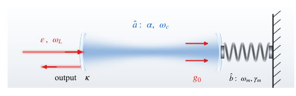
<figcaption class="paper-figure-caption"><b>Fig 1.</b> FIG. 1. Schematic of the model. A driven Fabry–P´erot cav- ity supports a single optical mode of resonance frequency ωc and energy-decay rate κ; its right mirror is a mechanical oscil- lator of frequency ωm and damping rate γm, whose displace- ment x is quantized through the phonon annihilation operator ˆb. Radiation pressure couples the intracavity photon number to this displacement with single-photon coupling g0 (red ar- rows). A coherent drive of frequency ωL and amplitude ε populates the cavity with a large classical amplitude α, and the output field leaking through the input mirror carries the information on g0. In the rotating frame of the drive the laser–cavity detuning is ∆= ωL −ωc;...</figcaption>
</figure>
<figure class="paper-figure-card">
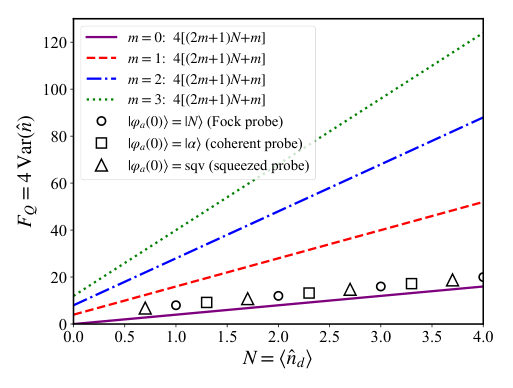
<figcaption class="paper-figure-caption"><b>Fig 2.</b> FIG. 2. Number-state reference (Theorem 1). F (θ) Q /4 = Var(ˆn) as a function of the probe mean photon number N for Fock references m = 0, 1, 2, 3: straight lines of slope 2m + 1. Markers show Fock, coherent, and squeezed-vacuum probes of equal mean photon number on the m = 1 line; all probe families of equal energy perform identically, so the optimum is degenerate.</figcaption>
</figure>
<figure class="paper-figure-card">
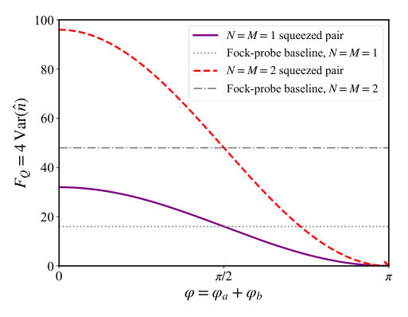
<figcaption class="paper-figure-caption"><b>Fig 3.</b> FIG. 3. Cost of squeezing-phase mismatch: F (θ) Q /4 versus the mismatch angle φ = φa + φb for phase-matched squeezed probe–reference pairs at N = M = 1 (blue) and N = M = 2 (red). φ = 0: optimum; φ = π/2: the pair-coherence term vanishes; φ = π: it flips sign and the QFI drops below the phase-insensitive Fock-probe baseline (dotted horizontal lines, Var = (2M+1)N+M). Crosses mark the φ = π values.</figcaption>
</figure>
<figure class="paper-figure-card">
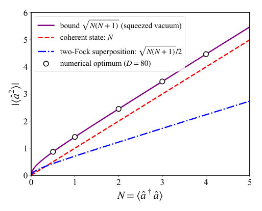
<figcaption class="paper-figure-caption"><b>Fig 4.</b> FIG. 4. The exact moment bound (16). Solid green: | ⟨ˆa2⟩| = p</figcaption>
</figure>
<figure class="paper-figure-card">
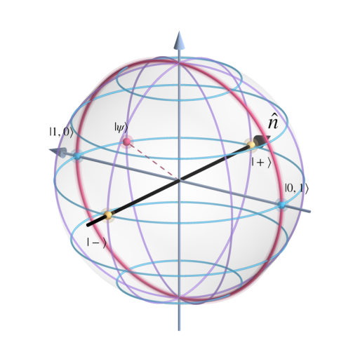
<figcaption class="paper-figure-caption"><b>Fig 5.</b> FIG. 5. Geometric picture of the definite-energy optimum. Each point of the translucent sphere represents a pure state in the fixed-E SU(2) manifold. The full-diameter black axis is the ˆn direction; its endpoints (gold markers |+⟩and |−⟩) are the extremal eigenstates, where Var(ˆn) = 0. Cyan paral- lels collect the states of fixed polar angle ϑ, i.e. fixed variance Var(ˆn) = E2 sin2 ϑ; purple meridians are the constant-phase paths that connect the two poles and parametrize the rela- tive phase φ within each parallel. The glowing pink equator (ϑ = π/2) is precisely the optimal family (28) of equal-weight superpositions of |±⟩, on which Var(ˆn) = E2 and F (θ) Q = 4E2</figcaption>
</figure>
</div>

<p><strong>Summary.</strong> This paper determines the optimal initial quantum states required to maximize the sensitivity (measured by QFI) when estimating the single-photon coupling in a cavity-optomechanical system. By analyzing the system in various regimes, the authors derive that optimal states range from squeezed vacua to NOON-like superpositions. The results are crucial for advancing quantum sensing technology, providing concrete predictions for achievable measurement precision in state-of-the-art experiments.</p>
<p><strong>Why it may be interesting.</strong> This work provides a rigorous quantum metrology analysis for a highly relevant physical platform (optomechanics), showing how fundamental quantum resources like entanglement and squeezing can be optimized to surpass standard quantum limits for sensing weak couplings.</p>
<details>
<summary>Detailed structure</summary>
<p><strong>Main problem.</strong> The paper aims to find the optimal initial quantum states that maximize the Quantum Fisher Information (QFI) for estimating the single-photon coupling strength ($g_0$) in a linearized cavity-optomechanical system.</p>
<p><strong>Main result.</strong> The optimal states depend on the constraints; for fixed total excitation number, the QFI saturates a Heisenberg bound achieved by states equivalent to a two-mode NOON state. Under cavity loss, information accumulation becomes linear at an optimal renewal duration of about 2.5 cavity lifetimes.</p>
<p><strong>Method.</strong> The analysis uses the Quantum Fisher Information (QFI) derived from the system's generator, which for pure inputs simplifies to four times the variance of the excitation-exchange operator. Optimization is performed by maximizing this variance under various physical constraints.</p>
<p><strong>Model / system.</strong> The system is a linearized cavity-optomechanical setup coupling an optical cavity mode ($\hat{a}$) to a mechanical oscillator ($\hat{b}$). The dynamics are governed by an effective Hamiltonian derived in the resolved-sideband regime, leading to an interaction term proportional to $\hat{n} = \hat{d}\hat{b}^\dagger + \hat{d}^\dagger\hat{b}$.</p>
<p><strong>Key observables.</strong> Quantum Fisher Information (QFI), per-hour relative precision, and the variance of the excitation-exchange operator ($ ext{Var}_{\psi_0}(\hat{n})$).</p>
<p><strong>Important parameters / regimes.</strong> Single-photon coupling ($g_0$), cavity lifetime ($\kappa$), detuning ($\Delta$), and the total excitation number constraint.</p>
<p><strong>Assumptions / limitations.</strong> The analysis often assumes the system is linearized or that the initial state is pure for initial derivations. Extensions consider cavity loss and different sideband regimes.</p>
<p><strong>Figures summary.</strong> Figure 1 schematically illustrates the model: a driven Fabry–Pérot cavity coupled to a mechanical oscillator via radiation pressure, with the output field carrying information on $g_0$.</p>
<p><strong>Paper structure.</strong> The paper first establishes the model and the QFI relationship in the red-detuned regime, deriving closed-form solutions for optimal states (e.g., squeezed vacuum, NOON states). It then extends the analysis to the blue sideband, open-system dynamics (cavity loss), and finally provides quantitative estimates for state-of-the-art experimental precision.</p>
</details>
<details>
<summary>Abstract</summary>
<p>We find the optimal initial states of a linearized cavity-optomechanical system for estimating the single-photon coupling by quantum Fisher information. In the red-detuned (beam-splitter) regime the interaction exchanges excitations between the two modes, and for pure inputs the Fisher information is four times the variance of the excitation-exchange operator, reducing the optimization to variance maximization with a closed-form solution. With the mechanical mode in a Fock state the probe is degenerate: any state saturating the photon-number constraint is optimal, and a Fock reference with many phonons enhances the per-photon sensitivity linearly. For an arbitrary fixed mechanical reference it becomes a phase-matched squeezed vacuum, from an exact bound on that coherence obtained by a Lagrange-dual argument. Jointly optimizing both modes at fixed total excitation number, the quantum Fisher information obeys a Heisenberg bound quadratic in the energy, saturated by equal superpositions of the two extremal eigenstates of the generator, equivalently a two-mode NOON state after a balanced beam splitter; balanced product Fock states reach only a linear enhancement. Exact diagonalization in truncated Fock spaces confirms all the results, the familiar single-photon input being the simplest saturating case. Three extensions are worked out: the blue sideband has an unbounded two-mode-squeezing spectrum, so the entangled optimum becomes impossible and the balanced product Fock state is exactly optimal at definite energy; under cavity loss the information accumulation turns linear on the cavity-lifetime timescale, at a renewal-optimal duration of about two and a half lifetimes; and for a state-of-the-art quantum-coherent coupling experiment the per-hour relative precision lies between one part in a million and ten parts in a million, number and thermal references being the most robust.</p>
</details>
<p><sub><a href="#top">↑ back to top</a></sub></p>

<p><a id="paper-2610.02167"></a></p>
<h3 id="polynomial-time-classical-and-quantum-simulation-of-quantum-impurity-models"><a href="http://arxiv.org/abs/2610.02167v1">Polynomial-time classical and quantum simulation of quantum impurity models</a></h3>
<p><strong>Authors:</strong> Jiaqing Jiang, Nathan Ju, Ojas Parekh, Chaithanya Rayudu, Andrew Zhao<br>
<strong>Type:</strong> theory · <strong>Category:</strong> strongly correlated electrons · <strong>PDF:</strong> <a href="https://arxiv.org/pdf/2610.02167v1">https://arxiv.org/pdf/2610.02167v1</a><br>
<strong>Analysis basis:</strong> full PDF text, analyzed in chunks
<strong>Topic relevance:</strong> <code>Keldysh / 2PI / non-Gaussian methods</code> <strong>2/5</strong> · <code>methods for driven-dissipative</code> <strong>2/5</strong> · <code>analog quantum simulation</code> <strong>1/5</strong></p>
<div class="figure-strip-hint">↔ Scroll figures horizontally</div>
<div class="paper-figures-scroll">
<figure class="paper-figure-card">
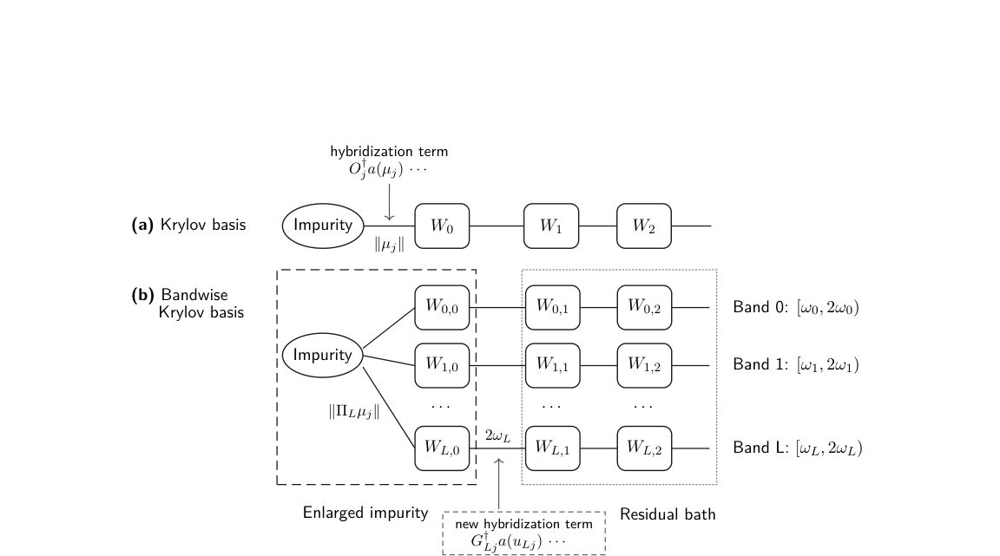
<figcaption class="paper-figure-caption"><b>Fig 1.</b> Figure 1: Illustration of the one-dimensional structure induced by a Krylov basis for the bath single-particle space. Each block represents a group of annihilation operators, and an edge indicates that the Hamiltonian contains coupling terms between the corresponding blocks. (a) Krylov basis. We choose a bath single-particle basis {gj}j consistent with the Krylov shells W0, W1, . . .. When H is expressed in terms of the annihilation operators {a(gj)}j, it has a one-dimensional block structure. Each block has at most 2m modes. The impurity couples only to the first block through the hybridization terms {O† ja(µj)}j, and each subsequent block couples only to its neighboring blocks. (b)...</figcaption>
</figure>
</div>

<p><strong>Summary.</strong> This paper comprehensively analyzes the computational complexity of simulating quantum impurity models. It proves that static properties, like ground-state energy, can be calculated efficiently on classical computers. However, it demonstrates that simulating non-equilibrium dynamics requires quantum computation, establishing a clear boundary for quantum advantage in this field.</p>
<p><strong>Why it may be interesting.</strong> This work provides a rigorous computational benchmark for impurity physics, clarifying where quantum simulation offers a genuine advantage (dynamics) versus where classical methods suffice (statics).</p>
<details>
<summary>Detailed structure</summary>
<p><strong>Main problem.</strong> The paper determines the computational complexity boundary between classical and quantum simulation for quantum impurity models.</p>
<p><strong>Main result.</strong> Static properties of these models are classically computable in polynomial time, while simulating non-equilibrium dynamics requires the full power of quantum computation.</p>
<p><strong>Method.</strong> The authors develop and analyze polynomial-time classical algorithms for static observables and use quantum complexity theory (BQP, DQC1) to characterize the difficulty of dynamic simulations.</p>
<p><strong>Model / system.</strong> The system studied is the quantum impurity model, which describes a small, strongly interacting fermionic subsystem coupled to a large, noninteracting bath. The Hamiltonian involves bath terms (Majorana operators) and impurity interactions.</p>
<p><strong>Key observables.</strong> Ground-state energy, partition function, and nonequilibrium Green's functions.</p>
<p><strong>Important parameters / regimes.</strong> System size ($n$), precision parameters ($\delta, \epsilon$), inverse temperature ($eta$), and time scales ($t$).</p>
<p><strong>Assumptions / limitations.</strong> The classical algorithms assume the impurity size is constant, and the quantum complexity analysis relies on specific encoding techniques (e.g., block encodings).</p>
<p><strong>Figures summary.</strong> Not specified.</p>
<p><strong>Paper structure.</strong> The paper progresses by first establishing classical tractability for static properties, then contrasting this with the quantum hardness for dynamics, and finally detailing the complexity bounds for preparing quantum Gibbs states.</p>
</details>
<details>
<summary>Abstract</summary>
<p>Quantum impurity models are paradigmatic models of interacting quantum matter, as well as key computational primitives for modern electronic-structure methods. They describe a small subsystem of interacting fermions coupled to a large, noninteracting bath. We perform a comprehensive study of the computational complexity of simulating impurity models, delineating the boundary between classical and quantum tractability for this class of problems. Our main finding is that static properties of quantum impurity models can be calculated efficiently on a classical computer. Specifically, we give classical algorithms that (1) estimate the ground-state energy to additive precision $δ$ in time $\mathrm{poly}(n,δ^{-1})$, and (2) estimate the partition function at inverse temperature $β$ to relative precision $δ$ in time $\mathrm{poly}(n,β,δ^{-1})$, where $n$ is the system size. These results improve the previous best-known complexity for ground-state energy estimation from quasipolynomial to polynomial time, while establishing for the first time rigorous polynomial-time guarantees for simulating impurity models in thermal equilibrium. On the other hand, we find that simulating dynamical properties of impurity models is hard for classical computers but easy on a quantum computer. As a canonical example, we show that computing their nonequilibrium Green's functions captures the full power of quantum computation, even at finite temperature. Taken together, our results rule out superpolynomial quantum speedups for computing static properties, but provide an avenue for quantum advantage in simulating impurity physics out of equilibrium.</p>
</details>
<p><sub><a href="#top">↑ back to top</a></sub></p>

<p><a id="paper-2610.02178"></a></p>
<h3 id="learning-syk-hamiltonians"><a href="http://arxiv.org/abs/2610.02178v1">Learning SYK Hamiltonians</a></h3>
<p><strong>Authors:</strong> Anurag Anshu, Srinivasan Arunachalam, Sitan Chen, Yeongwoo Hwang<br>
<strong>Type:</strong> theory · <strong>Category:</strong> other · <strong>PDF:</strong> <a href="https://arxiv.org/pdf/2610.02178v1">https://arxiv.org/pdf/2610.02178v1</a><br>
<strong>Analysis basis:</strong> full PDF text, analyzed in chunks
<strong>Topic relevance:</strong> <code>quantum measurements</code> <strong>2/5</strong> · <code>Keldysh / 2PI / non-Gaussian methods</code> <strong>1/5</strong> · <code>analog quantum simulation</code> <strong>1/5</strong></p>
<div class="figure-strip-hint">↔ Scroll figures horizontally</div>
<div class="paper-figures-scroll">
<figure class="paper-figure-card">
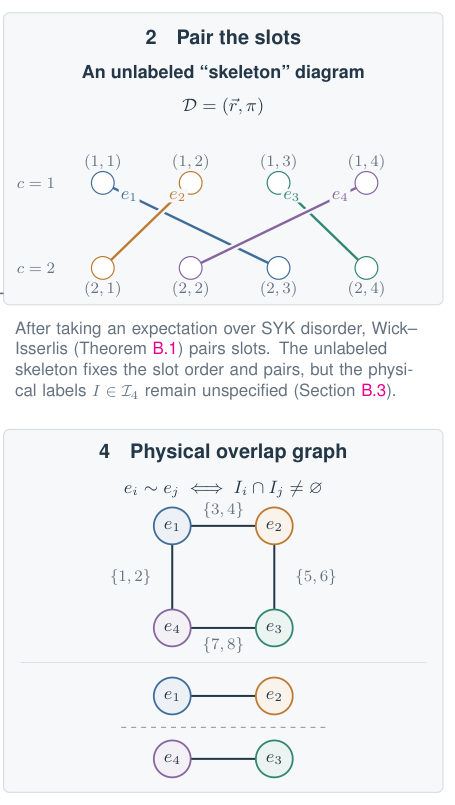
<figcaption class="paper-figure-caption"><b>Fig 1.</b> Figure 1: From Taylor slots to physical overlap graphs, for two replicas Zc = Z(β, ⃗g) sharing the same random disorder, with n ≥8 and normalized trace Tr. Every illustrated pair meets both replicas, so colored-support overlap is equivalent to Ii ∩Ij ̸= ∅; the upper graph labels display these intersections.</figcaption>
</figure>
<figure class="paper-figure-card">
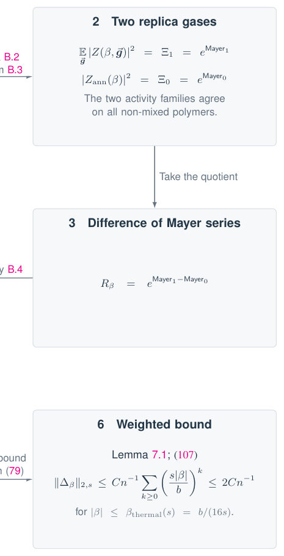
<figcaption class="paper-figure-caption"><b>Fig 2.</b> Figure 2: Proof of the ∆β bound in Lemma 7.1. Here s ≥1, b = 16βthermal. The subscripts 1 and 0 correspond to shared and independent disorder parameters. The Mayer series Mayer1 differs only from Mayer0 in cross-color Wick pairs; this corresponds to mixed polymers. The counting estimates also verify the Koteck´y–Preiss hypotheses on the disk |β| ≤b.</figcaption>
</figure>
</div>

<p><strong>Summary.</strong> This paper tackles the challenging problem of reconstructing the complex, dense Hamiltonian of the SYK model solely from measurements of its thermal Gibbs state. By exploiting the model's random mean-field nature, the authors derive sample complexity bounds showing that the Hamiltonian can be learned efficiently, even when traditional locality assumptions fail.</p>
<p><strong>Why it may be interesting.</strong> This work directly addresses the challenge of characterizing complex, highly entangled quantum systems (like those modeled by SYK) using limited experimental measurements, which is a major goal in quantum simulation and quantum information.</p>
<details>
<summary>Detailed structure</summary>
<p><strong>Main problem.</strong> The core problem is learning the dense Sachdev-Ye-Kitaev (SYK) Hamiltonian from measurements of the system's Gibbs state.</p>
<p><strong>Main result.</strong> The authors prove that the SYK Hamiltonian can be learned to high accuracy using a sample complexity that is polynomial in system size, overcoming limitations faced by algorithms designed for local interactions.</p>
<p><strong>Method.</strong> The approach exploits the random mean-field structure of the SYK model, utilizing techniques from statistical inference (like maximum entropy methods) adapted for quantum expectation values.</p>
<p><strong>Model / system.</strong> The study focuses on the SYK model, a strongly interacting quantum many-body system characterized by all-to-all quartic interactions, leading to a dense Hamiltonian structure.</p>
<p><strong>Key observables.</strong> The Gibbs state ($\gamma_{\vec{g}}$), quartic expectation values ($\mu_{eta,I}$), and the log-partition function ($\Phi(\vec{g})$) are central observables.</p>
<p><strong>Important parameters / regimes.</strong> The inverse temperature ($eta$), the interaction order ($q$), and the desired accuracy ($\epsilon$) are key parameters governing the learning bounds.</p>
<p><strong>Assumptions / limitations.</strong> The success of the sample-efficient learning relies fundamentally on the random mean-field structure of the SYK couplings.</p>
<p><strong>Paper structure.</strong> The paper establishes the problem of Hamiltonian learning for dense systems, presents the sample-efficient recovery algorithm for fixed $eta$, and discusses a separate, time-efficient algorithm for small constant $eta$.</p>
</details>
<details>
<summary>Abstract</summary>
<p>We study the problem of learning the dense Sachdev--Ye--Kitaev (SYK) Hamiltonian from copies of its Gibbs state. Existing algorithms for Hamiltonian learning typically rely on geometric locality or bounded interaction degree and therefore do not apply to SYK, where each quartic interaction overlaps with $Θ(n^3)$ others. We show that this obstruction can be overcome by exploiting the random mean-field structure of the model. At any constant temperature, we prove that with high probability over the SYK couplings, the entire Hamiltonian can be learned to inverse-polynomial accuracy using polynomially many samples. Furthermore, when the inverse temperature is restricted to be a sufficiently small constant, we construct a quasipolynomial-time learning algorithm which is qualitatively different from the sample-efficient algorithm.</p>
</details>
<p><sub><a href="#top">↑ back to top</a></sub></p>

<p><a id="paper-2610.01792"></a></p>
<h3 id="learnt-attacks-on-quantum-key-distribution-under-channel-noise-and-device-drift"><a href="http://arxiv.org/abs/2610.01792v1">Learnt Attacks on Quantum Key Distribution under Channel Noise and Device Drift</a></h3>
<p><strong>Authors:</strong> Marcel Mordarski, Benjamin Gras, Abdelrahman Shehata, Daniel Budina, Roberto Bondesan<br>
<strong>Type:</strong> theory · <strong>Category:</strong> quantum information and computing · <strong>PDF:</strong> <a href="https://arxiv.org/pdf/2610.01792v1">https://arxiv.org/pdf/2610.01792v1</a><br>
<strong>Analysis basis:</strong> full PDF text, analyzed in chunks
<strong>Topic relevance:</strong> <code>methods for driven-dissipative</code> <strong>2/5</strong> · <code>quantum measurements</code> <strong>2/5</strong></p>
<div class="figure-strip-hint">↔ Scroll figures horizontally</div>
<div class="paper-figures-scroll">
<figure class="paper-figure-card">
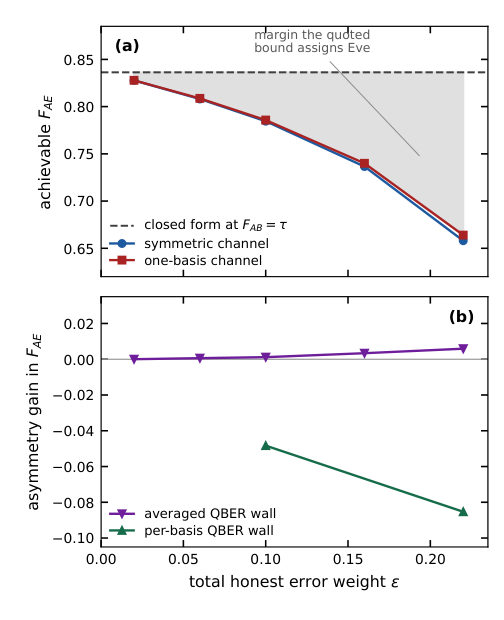
<figcaption class="paper-figure-caption"><b>Fig 1.</b> Figure 1. Attainable attacks under stationary channel noise at an abort threshold of FAB ⩾0.87. (a) The maximum at- tainable FAE under the trusted-noise convention as the chan- nel’s total honest error weight, ε, increases. This is plotted for two scenarios: a channel concentrating all its error in a single basis, and one splitting the error evenly. Because both channels produce the same observed disturbance, the noise- less closed-form solution (dashed line) assigns them identical values. The shaded region highlights the gap between this theoretical limit and the actual attainable FAE. Each data point represents the best outcome from three random seeds, with a cross-seed spread of...</figcaption>
</figure>
<figure class="paper-figure-card">
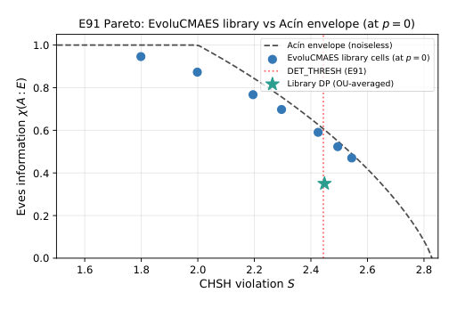
<figcaption class="paper-figure-caption"><b>Fig 2.</b> Figure 2. Disturbance versus information in the device- independent setting. At p = 0, the discovered attacks trace the noiseless Acín envelope [27, 28], demonstrating that the search successfully saturates the analytical frontier where one exists. However, when averaged over the drifting noise, the attainable value (marked by the star) drops to χ ≈0.35, fall- ing short of the 0.607 permitted by the theoretical envelope at the threshold. This gap occurs for two reasons: the the- oretical envelope assumes a strictly noiseless channel (p = 0) while the attainable value averages over active noise (p &gt; 0), and the constructed attacks are restricted to a fixed three- qubit preparation.</figcaption>
</figure>
<figure class="paper-figure-card">
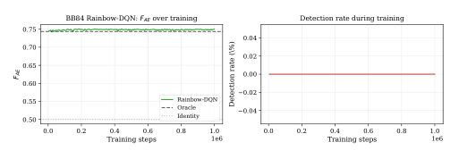
<figcaption class="paper-figure-caption"><b>Fig 3.</b> Figure 3. Adaptive attack on BB84 under a drifting device. Upper panel: attacker information FAE during evaluation, reaching the greedy oracle (dashed) at its best checkpoints and well above the passive baseline (dotted). Lower panel: detection rate, which stays at zero at those checkpoints.</figcaption>
</figure>
<figure class="paper-figure-card">
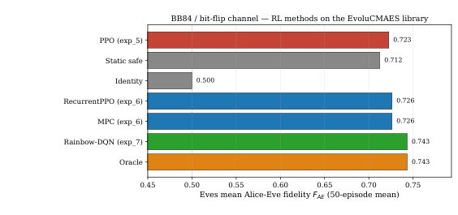
<figcaption class="paper-figure-caption"><b>Fig 4.</b> Figure 4. BB84 under a drifting bit-flip channel: final evalu- ation FAE across policies, strict-feasibility variants only. The value-based agent matches the greedy oracle at 0.7434, un- masked policy-gradient methods plateau around 0.02 below it, and the noise-indexed conservative lookup (“Static safe”) reaches 0.7197.</figcaption>
</figure>
<figure class="paper-figure-card">
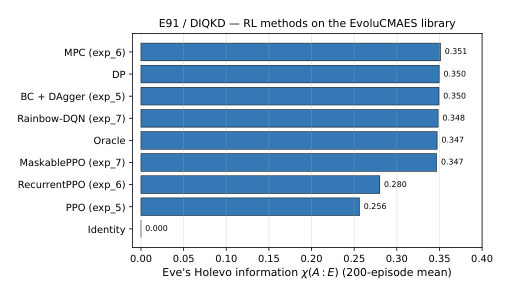
<figcaption class="paper-figure-caption"><b>Fig 5.</b> Figure 6. E91/DIQKD: final evaluation χ across policies. The masked value-based agent reaches 0.3484 against a greedy or- acle at 0.3507 and a coarse-grid dynamic-programming run at 0.3540 with 7% detection, whereas unmasked policy-gradient methods collapse to χ ≈0.26–0.28 by confining themselves to three or four distinct actions.</figcaption>
</figure>
</div>

<p><strong>Summary.</strong> This paper develops a framework to analyze eavesdropping attacks on QKD when the quantum channel noise drifts over time. By modeling the attack as a constrained Markov decision process and using reinforcement learning, the authors show that adaptive attackers can exploit channel drift to gain significantly more information than previously assumed. This work advances the security understanding of QKD in real-world, non-stationary environments.</p>
<p><strong>Why it may be interesting.</strong> It provides a rigorous, computationally intensive framework for assessing the security margins of quantum communication links against sophisticated, time-varying adversaries, which is crucial for practical quantum network deployment.</p>
<details>
<summary>Detailed structure</summary>
<p><strong>Main problem.</strong> The paper addresses the security of Quantum Key Distribution (QKD) links when the underlying quantum channel drifts over time, a scenario not adequately covered by standard security analyses that assume stationary channels.</p>
<p><strong>Main result.</strong> Using reinforcement learning, the authors demonstrated that an adaptive eavesdropper can significantly increase their information gain (Holevo information) compared to the best fixed attack, reaching values close to the theoretical upper bound.</p>
<p><strong>Method.</strong> The problem is modeled as a constrained Markov decision process, solved using reinforcement learning to train an adaptive eavesdropping strategy that optimizes circuit selection round-by-round.</p>
<p><strong>Model / system.</strong> The system involves QKD protocols (BB84, E91) transmitted over channels whose noise follows an Ornstein–Uhlenbeck process, simulating channel drift between recalibrations.</p>
<p><strong>Key observables.</strong> Holevo information ($\chi$), Fidelity ($F$), and the achievable Key Rate, which are used to quantify the eavesdropper's information gain.</p>
<p><strong>Important parameters / regimes.</strong> The noise level ($  ext{pt}$), the rate of channel drift ($\kappa$), and the budget over the rounds of the attack.</p>
<p><strong>Assumptions / limitations.</strong> The primary gap addressed is the lack of quantification regarding the attacker's gain specifically due to channel drift, moving beyond the assumption of stationary noise.</p>
<p><strong>Figures summary.</strong> The notes mention comparing the separation between attainable FAE and the noiseless cloning envelope across various noise weights, and showing the evolution of the noise level over time in the drift analysis.</p>
<p><strong>Paper structure.</strong> The work progresses by first framing the problem as an adaptive MDP, then applying RL to find optimal attack circuits, and finally demonstrating quantitative gains on specific protocols (E91 and BB84) under simulated channel drift.</p>
</details>
<details>
<summary>Abstract</summary>
<p>Quantum key distribution (QKD) links are provisioned from security analyses of stationary channels, whereas the devices that determine the channel drift between recalibrations. Whether an eavesdropper who cannot alter the channel's own noise gains by following that drift has not been quantified. Adaptive eavesdropping is posed here as a constrained Markov decision process in which the attacker selects one circuit per round while the noise level follows an Ornstein--Uhlenbeck process and the abort condition is a budget over each block of rounds. The value of adaptation is bounded by the best fixed circuit and a dynamic-programming upper bound. The actions are learnt attacks. Whereas Decker et al. trained a parametrised circuit on a fixed gate template against a fixed channel, here the gate structure and rotation angles are searched jointly. This yields circuits compact enough to form a discrete action set, extending the construction to noise models lacking a known template, including the amplitude damping channel. On device-independent E91 under bilateral depolarising noise, a reinforcement-learning attacker raises her Holevo information from $0.135$ for the best fixed circuit to $0.348$ at zero detection, $98\%$ of the upper bound. On BB84 under a drifting bit-flip channel, she exceeds a conservative noise-indexed rule by $0.024$ in fidelity, reaching $99\%$ of the upper bound. Under stationary noise, the attacker's gain from basis asymmetry changes sign between an averaged and a per-basis error-rate constraint. The search, started from random gate sequences, recovers the analytical cloners and the collective-attack key rate, and meets the lower bound of the Winick--Lütkenhaus--Coles objective from above.</p>
</details>
<p><sub><a href="#top">↑ back to top</a></sub></p>

<p><a id="paper-2610.00945"></a></p>
<h3 id="tatva-a-reinforcement-learning-framework-for-quantum-circuit-synthesis"><a href="http://arxiv.org/abs/2610.00945v1">TATVA: A Reinforcement Learning Framework for Quantum Circuit Synthesis</a></h3>
<p><strong>Authors:</strong> Om Bhamare, Aryan Jadhav, Manas Shinde, Prithvi Shinde<br>
<strong>Type:</strong> theory · <strong>Category:</strong> quantum information and computing · <strong>PDF:</strong> <a href="https://arxiv.org/pdf/2610.00945v1">https://arxiv.org/pdf/2610.00945v1</a><br>
<strong>Analysis basis:</strong> full PDF text, analyzed in chunks
<strong>Topic relevance:</strong> <code>methods for driven-dissipative</code> <strong>2/5</strong> · <code>quantum measurements</code> <strong>2/5</strong></p>
<div class="figure-strip-hint">↔ Scroll figures horizontally</div>
<div class="paper-figures-scroll">
<figure class="paper-figure-card">
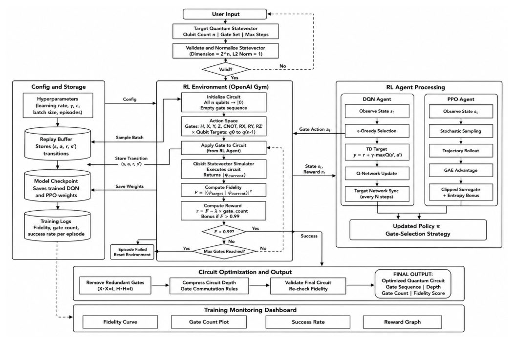
<figcaption class="paper-figure-caption"><b>Fig 1.</b> Figure 1. System architecture of TATVA, showing the interaction between the RL environment, the DQN/PPO agent-processing block, the configuration and storage layer, and the circuit-optimization stage that produces the final output.</figcaption>
</figure>
<figure class="paper-figure-card">
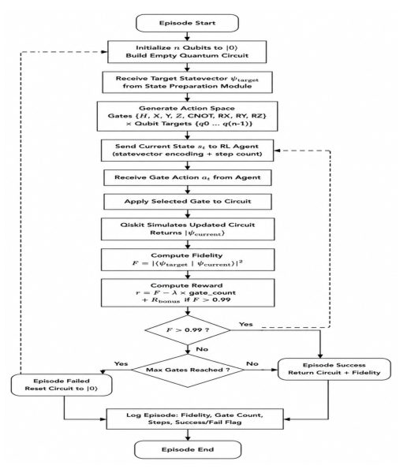
<figcaption class="paper-figure-caption"><b>Fig 2.</b> Figure 3. Reinforcement Learning environment workflow, from episode start through gate application, fidelity/reward computation, and episode logging.</figcaption>
</figure>
<figure class="paper-figure-card">
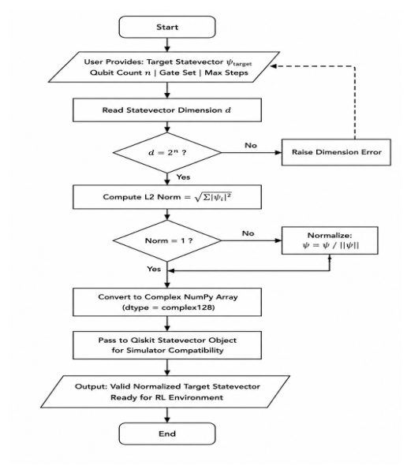
<figcaption class="paper-figure-caption"><b>Fig 3.</b> Figure 2. Input and target-state preparation layer: dimension validation, L2 normalization, and conversion to a Qiskit Statevector object.</figcaption>
</figure>
<figure class="paper-figure-card">
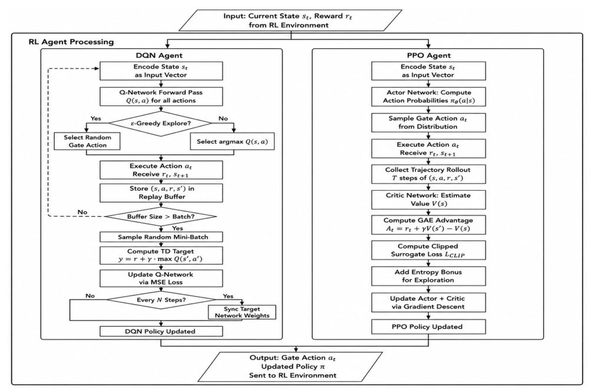
<figcaption class="paper-figure-caption"><b>Fig 4.</b> Figure 4. DQN and PPO agent workflow, run in parallel on the same environment state and reward signal, each producing an updated gate-selection policy.</figcaption>
</figure>
<figure class="paper-figure-card">
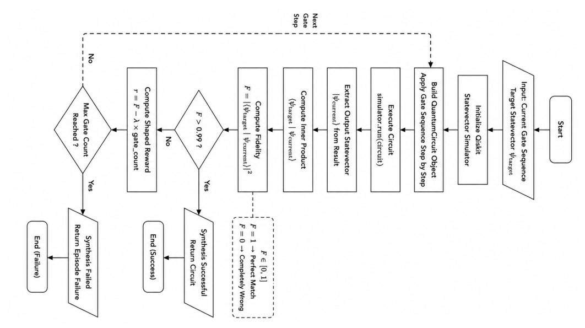
<figcaption class="paper-figure-caption"><b>Fig 5.</b> Figure 5. Quantum simulation and fidelity-evaluation flow: circuit execution, fidelity computation, and the success/continue decision at F &gt; 0.999999.</figcaption>
</figure>
</div>

<p><strong>Summary.</strong> This paper introduces TATVA, an RL framework that treats quantum circuit synthesis as a sequential decision problem to prepare target quantum states. By employing parallel DQN and PPO agents, the system selects gates to maximize fidelity, followed by an optimization step to ensure the resulting circuit is both accurate and compact. This advances the field by enabling automatic, high-fidelity quantum circuit design.</p>
<p><strong>Why it may be interesting.</strong> While focused on circuit synthesis, the reliance on advanced RL techniques (DQN/PPO) for sequential decision-making in quantum systems provides a generalizable algorithmic framework relevant to optimizing quantum control pulses or state preparation in AMO experiments.</p>
<details>
<summary>Detailed structure</summary>
<p><strong>Main problem.</strong> The core challenge is automatically synthesizing quantum circuits to prepare a desired target quantum state with the highest possible fidelity while minimizing the number of gates.</p>
<p><strong>Main result.</strong> The proposed TATVA framework successfully synthesizes high-fidelity circuits (achieving $F \geq 0.999999$) for up to 5 qubits, significantly compacting the circuit depth and gate count compared to classical methods.</p>
<p><strong>Method.</strong> It employs a Reinforcement Learning (RL) approach, utilizing parallel DQN and PPO agents to treat circuit synthesis as a sequential decision process, followed by a post-hoc optimization step.</p>
<p><strong>Model / system.</strong> The system operates on $n$-qubit quantum circuits, simulated using Qiskit's statevector simulator. The process starts from the initial state $|0
angle^{\otimes n}$ and iteratively applies gates selected by the RL agents.</p>
<p><strong>Key observables.</strong> Fidelity ($F$), Success Rate, Gate Count ($    ext{N}_g$), and Circuit Depth ($D$).</p>
<p><strong>Important parameters / regimes.</strong> The fidelity threshold is set at $F > 0.999999$. The system is tested up to 5 qubits.</p>
<p><strong>Assumptions / limitations.</strong> The initial design relies on predefined rules, which motivates the need for an RL approach to handle complex, hard-to-design target states.</p>
<p><strong>Figures summary.</strong> Figures illustrate the end-to-end pipeline: system architecture (Fig 1), input/target state preparation (Fig 2), the RL environment workflow (Fig 3), parallel agent operation (Fig 4), fidelity evaluation (Fig 5), and final circuit optimization (Fig 6).</p>
<p><strong>Paper structure.</strong> The paper details the TATVA pipeline: first, target state preparation; second, the RL-based gate selection using DQN/PPO; third, quantum simulation and fidelity checking; and finally, a post-hoc optimization stage to reduce circuit depth.</p>
</details>
<details>
<summary>Abstract</summary>
<p>One of the most important initial steps in quantum computing is high-fidelity quantum state preparation, because errors in it can affect the final computational result. Therefore, one of the major challenges is to design a quantum circuit that can achieve the desired target state accurately with a smaller number of gates. Traditionally, circuits are designed using predefined rules and mathematical decompositions, but this makes it difficult to design circuits for different and complex target states. This paper presents TATVA, a reinforcement learning (RL) system for synthesizing quantum circuits. TATVA views circuit synthesis as a sequential decision problem in which the agents select one gate at a time and calculate the fidelity after each applied gate, with the gate producing the highest fidelity selected for the circuit. The system introduces a parallel architecture that uses two RL agents, Deep Q-Network (DQN) and Proximal Policy Optimization (PPO), along with Qiskit's statevector simulator. The system can synthesize up to 5 qubits while achieving a fidelity of 0.999999 and producing compact circuits. After achieving the desired fidelity, it performs a post-hoc optimization step that reduces the circuit depth while preserving the achieved fidelity. The circuit is finalized using fidelity, success rate, gate count, and circuit depth. Target states that are not used during training are used to test whether the system has learned effectively and can generalize beyond the training states. This approach aims to enable automatic quantum circuit synthesis with high fidelity using reinforcement learning.</p>
</details>
<p><sub><a href="#top">↑ back to top</a></sub></p>

<p><a id="paper-2610.00646"></a></p>
<h3 id="a-hilbert-space-analogy-for-sexual-orientation-and-gender-identity"><a href="http://arxiv.org/abs/2610.00646v1">A Hilbert-Space Analogy for Sexual Orientation and Gender Identity</a></h3>
<p><strong>Authors:</strong> Sofia Fatigoni<br>
<strong>Type:</strong> theory · <strong>Category:</strong> other · <strong>PDF:</strong> <a href="https://arxiv.org/pdf/2610.00646v1">https://arxiv.org/pdf/2610.00646v1</a><br>
<strong>Analysis basis:</strong> full PDF text, analyzed in chunks
<strong>Topic relevance:</strong> <code>quantum measurements</code> <strong>2/5</strong> · <code>analog quantum simulation</code> <strong>1/5</strong></p>
<div class="figure-strip-hint">↔ Scroll figures horizontally</div>
<div class="paper-figures-scroll">
<figure class="paper-figure-card">
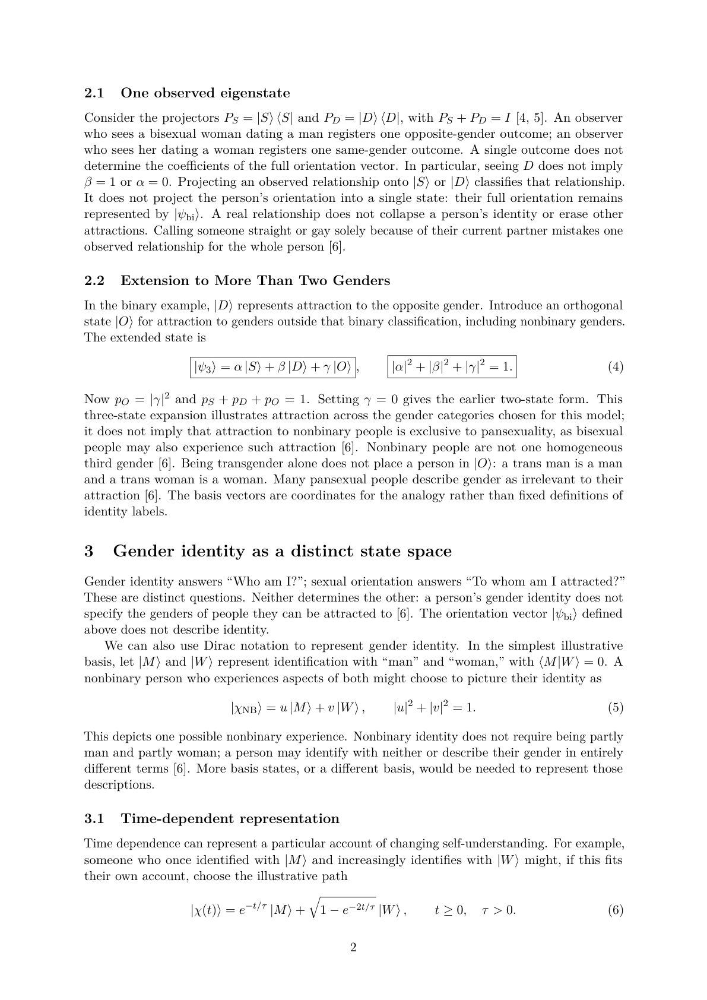
<figcaption class="paper-figure-caption"><b>Fig 1.</b> Low-resolution page preview, page 2</figcaption>
</figure>
<figure class="paper-figure-card">
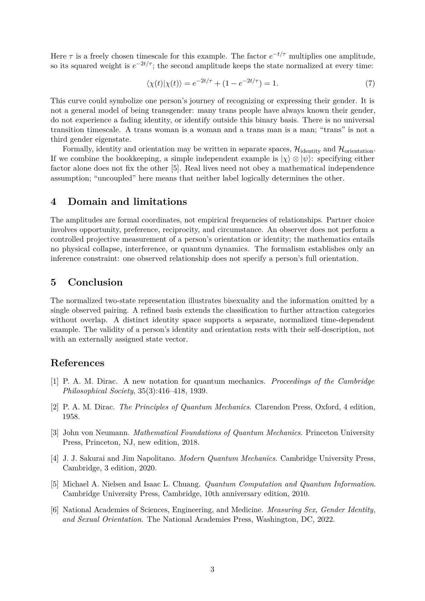
<figcaption class="paper-figure-caption"><b>Fig 2.</b> Low-resolution page preview, page 3</figcaption>
</figure>
</div>

<p><strong>Summary.</strong> This paper constructs a mathematical analogy using quantum mechanics formalism to model human sexual orientation and gender identity. It represents these concepts as state vectors within distinct, finite-dimensional Hilbert spaces. The core argument is that the quantum framework can formally describe the spectrum of human attraction and identity without implying physical collapse or measurement procedures.</p>
<p><strong>Why it may be interesting.</strong> While not a physical theory, the rigorous application of quantum formalism (Hilbert spaces, state vectors) to abstract, non-physical concepts provides an interesting exercise in mathematical analogy for theoretical physicists.</p>
<details>
<summary>Detailed structure</summary>
<p><strong>Main problem.</strong> The paper develops a formal mathematical analogy using quantum mechanics concepts to model human sexual orientation and gender identity.</p>
<p><strong>Main result.</strong> It argues that sexual orientation and gender identity can be modeled in distinct, mathematically independent state spaces, and that a single observation does not fully determine the underlying state vector.</p>
<p><strong>Method.</strong> The authors employ Dirac notation, defining state vectors and using concepts like normalization and basis expansion to represent sexual attraction and gender identity.</p>
<p><strong>Model / system.</strong> Sexual orientation is modeled in a finite-dimensional state-space (e.g., $|S
angle, |D
angle$) with a state vector $|\psi_{bi}
angle = \alpha |S
angle + eta |D
angle$. Gender identity is treated in a separate space, with time-dependent trajectories illustrated for conceptual purposes.</p>
<p><strong>Key observables.</strong> Amplitudes ($\alpha, eta, \gamma, u, v$), which determine the probability weights ($|\cdot|^2$) for different attractions or identities.</p>
<p><strong>Important parameters / regimes.</strong> The normalization condition ($\sum |\cdot|^2 = 1$) and the timescale ($  au$) used for illustrative time evolution.</p>
<p><strong>Assumptions / limitations.</strong> The model is explicitly stated to be an analogy, not a physical theory or measurement procedure for human sexuality; the validity rests with self-description, not the state vector.</p>
<p><strong>Figures summary.</strong> Not specified by the notes.</p>
<p><strong>Paper structure.</strong> The paper introduces the mathematical framework by defining the state-space for sexual orientation, extending it to multiple genders, and then defining a separate, analogous state space for gender identity, concluding with a discussion of the model's limitations.</p>
</details>
<details>
<summary>Abstract</summary>
<p>We introduce a finite-dimensional state-space representation of bisexuality in Dirac notation, specify normalized amplitude weights, and analyze the limits of inference from one single observation. We extend the basis for discussing attraction across genders, then define a distinct state space for gender identity with an illustrative normalized time-dependent trajectory. The model is an analogy, not a physical theory or a measurement procedure for human sexuality.</p>
</details>
<p><sub><a href="#top">↑ back to top</a></sub></p>

<p><a id="paper-2610.02145"></a></p>
<h3 id="a-provable-quantum-advantage-for-approximate-optimization-via-decoded-quantum-interferometry"><a href="http://arxiv.org/abs/2610.02145v1">A provable quantum advantage for approximate optimization via decoded quantum interferometry</a></h3>
<p><strong>Authors:</strong> Maximilian J. Kramer, Elies Gil-Fuster, Benjamin D. M. Jones, Jens Eisert, Franz J. Schreiber<br>
<strong>Type:</strong> theory · <strong>Category:</strong> quantum information and computing · <strong>PDF:</strong> <a href="https://arxiv.org/pdf/2610.02145v1">https://arxiv.org/pdf/2610.02145v1</a><br>
<strong>Analysis basis:</strong> full PDF text, analyzed in chunks
<strong>Topic relevance:</strong> <code>quantum measurements</code> <strong>2/5</strong> · <code>interference shaping light</code> <strong>1/5</strong></p>
<div class="figure-strip-hint">↔ Scroll figures horizontally</div>
<div class="paper-figures-scroll">
<figure class="paper-figure-card">
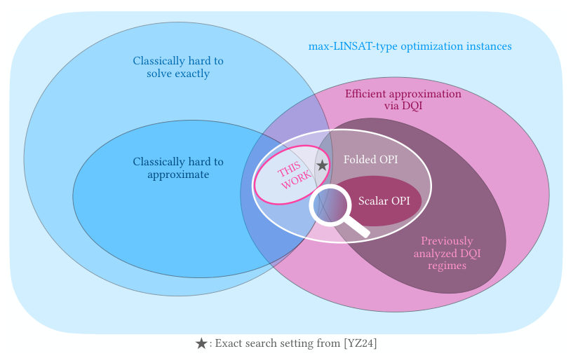
<figcaption class="paper-figure-caption"><b>Fig 1.</b> Figure 1: Schematic context for the present results. The magnifying-glass lens marks the unresolved sta- tus of quantum advantage for scalar OPI: existing DQI analyses outperform the best known classical algo- rithms, but do not establish a lower bound against arbitrary classical algorithms. The star marks Yamakawa and Zhandry’s exact-search oracle separation on folded Reed–Solomon instances. The present work estab- lishes an approximation separation for DQI on folded OPI. The regions are conceptual and do not denote literal set inclusions across computational models.</figcaption>
</figure>
<figure class="paper-figure-card">
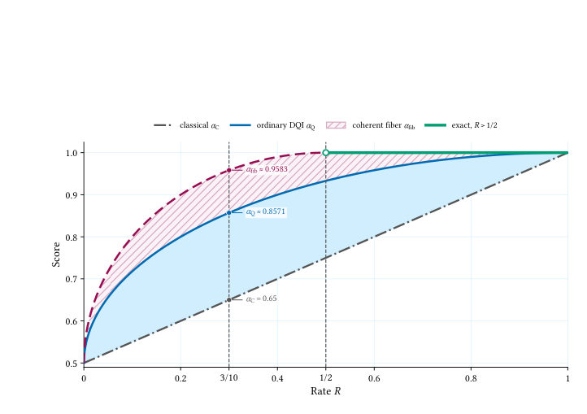
<figcaption class="paper-figure-caption"><b>Fig 2.</b> Figure 2: Provable score guarantees for our balanced folded OPI instances. DQI’s guarantee holds for every promised oracle, whereas the stronger guarantees from coherent fiber summation hold only on typical sampled oracles. The gray dash-dotted curve is the classical threshold 𝛼C attained by Prange’s algorithm under the distributional quantifiers of Informal Theorem 1. The solid blue curve marks 𝛼Q, and the light-blue region indicates the thresholds above 𝛼C and below 𝛼Q that DQI achieves on every promised oracle. The pale-pink hatched region marks the additional thresholds below 𝛼fib achieved by coherent fiber summation on typical sampled oracles. The solid green segment gives...</figcaption>
</figure>
<figure class="paper-figure-card">
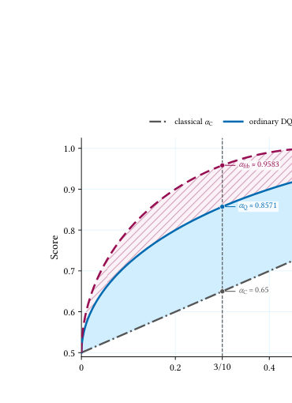
<figcaption class="paper-figure-caption"><b>Fig 3.</b> Figure 2 summarizes the resulting certified score regimes.</figcaption>
</figure>
<figure class="paper-figure-card">

<figcaption class="paper-figure-caption"><b>Fig 4.</b> Figure 3: From block max-LINSAT to folded OPI. For a general linear encoder 𝐵, the objective counts the accepted blocks 𝐵𝑖𝑥∈𝐴𝑖. Choosing Vandermonde rows at distinct evaluation points identifies 𝑥with the coefficients of 𝑄(𝑌) = Í𝐾−1 𝑟=0 𝑥𝑟𝑌𝑟, so 𝐵𝑖𝑥= (𝑄(𝛼𝑖,𝑗))ℎ−1 𝑗=0 . This gives folded polynomial intersection: one membership query tests an entireℎ-vector of polynomial evaluations. The lower panel records our concrete family parameters for admissible 𝑀. Each acceptance set contains exactly half of the block symbols; the score is the fraction of blocks accepted by the chosen polynomial. The output is shown with its folded grouping, and dimensions are schematic.</figcaption>
</figure>
</div>

<p><strong>Summary.</strong> This work proves a quantum advantage for approximate optimization by analyzing the Decoded Quantum Interferometry (DQI) algorithm on a structured problem called folded OPI. The authors establish a strict gap between the quantum performance and the best classical performance, showing that achieving certain accuracy levels classically requires super-polynomial queries. This advances the understanding of quantum computational power in the context of structured search problems.</p>
<p><strong>Why it may be interesting.</strong> While the primary focus is quantum computation theory, the techniques involving coherent summation and state-vector analysis are highly relevant to understanding quantum measurement limitations in complex physical systems.</p>
<details>
<summary>Detailed structure</summary>
<p><strong>Main problem.</strong> The paper aims to establish a provable quantum advantage for solving approximate optimization problems using the Decoded Quantum Interferometry (DQI) framework.</p>
<p><strong>Main result.</strong> A strict separation is proven between the approximation ratio achievable by DQI and the best possible performance of any polynomial-time classical algorithm for the folded optimal polynomial intersection (folded OPI) problem.</p>
<p><strong>Method.</strong> The authors extend classical lower-bound methods to the approximation setting, utilizing DQI, which connects optimization to coding theory via Fourier transforms over finite fields.</p>
<p><strong>Model / system.</strong> The analysis is set in an oracle model involving membership oracles for acceptance sets, specifically applied to the folded OPI problem, which is related to coding theory structures.</p>
<p><strong>Key observables.</strong> Approximation Ratio/Score ($\alpha$), Quantum Score ($\alpha_Q$), and Classical Threshold ($\alpha_C$).</p>
<p><strong>Important parameters / regimes.</strong> Code Rate ($R$), Query Complexity (number of blocks $M$).</p>
<p><strong>Assumptions / limitations.</strong> The separation is established for an explicit family of balanced folded-OPI instances, and the stronger $\alpha_{fib}$ guarantee holds only on typical sampled instances.</p>
<p><strong>Figures summary.</strong> Figure 1 schematically shows the approximation separation for DQI on folded OPI. Figure 2 illustrates the provable score guarantees ($\alpha_C$, $\alpha_Q$, $\alpha_{fib}$, exact search) across different rates $R$.</p>
<p><strong>Paper structure.</strong> The paper builds upon Jordan et al.'s DQI framework, extends classical lower-bound methods to the approximation setting, and introduces a modified DQI algorithm achieving a stronger separation guarantee.</p>
</details>
<details>
<summary>Abstract</summary>
<p>Decoded quantum interferometry (DQI) is a novel paradigm for tackling approximate optimization problems on quantum computers. This framework comes with strong performance guarantees and exploits a well-established duality between optimization and coding theory. A central question, however, is whether DQI can actually provably outperform all polynomial-time classical algorithms. In this work, we establish such an advantage in an oracle setting: we consider an optimization task called folded optimal polynomial intersection (folded OPI), where the acceptance sets are chosen randomly and accessed through membership oracles. We establish a strict gap between the approximation ratio achievable by any polynomial-time classical algorithm and the approximation ratio achieved by the DQI algorithm. Our proof builds on Jordan et al.'s DQI framework for approximate optimization and extends the classical lower-bound method underlying Yamakawa and Zhandry's exact-search oracle separation to approximation. Building on recent developments by Sun and Wootters, Horinaga and Yamakawa, and Jo, we further show that a modified version of the DQI algorithm achieves a strictly larger gap on the folded OPI problem, yielding an even stronger quantum separation. As a concrete example, for code rate $0.3$, DQI and the modified algorithm achieve expected scores of approximately $0.85$ and $0.95$, respectively. In contrast, exceeding the classical threshold of $0.65$ by any fixed amount with constant probability on sampled instances requires super-polynomially many classical membership queries.</p>
</details>
<p><sub><a href="#top">↑ back to top</a></sub></p>

<p><a id="paper-2610.01253"></a></p>
<h3 id="context-aware-error-mitigation-orchestration-for-hybrid-quantum-reinforcement-learning-on-nisq-systems"><a href="http://arxiv.org/abs/2610.01253v1">Context-Aware Error Mitigation Orchestration for Hybrid Quantum Reinforcement Learning on NISQ Systems</a></h3>
<p><strong>Authors:</strong> Bisma Majid, Shabir Ahmed Sofi, Mir Mohammad Yousuf<br>
<strong>Type:</strong> both · <strong>Category:</strong> quantum information and computing · <strong>PDF:</strong> <a href="https://arxiv.org/pdf/2610.01253v1">https://arxiv.org/pdf/2610.01253v1</a><br>
<strong>Analysis basis:</strong> full PDF text, analyzed in chunks
<strong>Topic relevance:</strong> <code>QC/QI experiment</code> <strong>2/5</strong> · <code>quantum measurements</code> <strong>1/5</strong></p>
<div class="figure-strip-hint">↔ Scroll figures horizontally</div>
<div class="paper-figures-scroll">
<figure class="paper-figure-card">

<figcaption class="paper-figure-caption"><b>Fig 1.</b> Figure 1: Block diagram of the Adaptive Policy-Guided Error Mitigation (APGEM) framework. Quantum circuits generate policies degraded by noise, which are corrected through an adaptive selection of mitigation strategies (ZNE, PEC, CDR, REM). The corrected policy guides QRL updates for solving the CVRP.</figcaption>
</figure>
<figure class="paper-figure-card">

<figcaption class="paper-figure-caption"><b>Fig 2.</b> Figure 2: Block diagram of the proposed methodology. The workflow begins with VRP instance generation, followed by reinforcement learning environ- ment interaction through a variational quantum circuit. Execution under noise is adaptively corrected by the APGEM controller, with fidelity and entropy metrics guiding policy optimization. The training loop produces results compared against a classical baseline.</figcaption>
</figure>
<figure class="paper-figure-card">

<figcaption class="paper-figure-caption"><b>Fig 3.</b> Figure 3: Quantum policy ansatz for the CVRP–QRL framework. The first layer applies Ry(θi) rotations to encode environment-state features into the quantum register. This is followed by a linear entanglement layer of controlled-Z gates to capture correlations across qubits. Two variational layers are then stacked, each consisting of trainable Ry(ϕ(k) i ) rotations and entangling operations, allowing expressive state transformations. The final measurement distribution guides action selection within the reinforcement learning loop.</figcaption>
</figure>
<figure class="paper-figure-card">

<figcaption class="paper-figure-caption"><b>Fig 4.</b> Figure 4: Circuit-level illustration of the adaptive error mitigation module integrated into the CVRP–QRL framework.</figcaption>
</figure>
<figure class="paper-figure-card">

<figcaption class="paper-figure-caption"><b>Fig 5.</b> Figure 5: Mean approximation ratio to best-known with bootstrap 95% confidence intervals over 30 CVRPLIB instances. OR-Tools and Clarke– Wright are the strongest and statistically indistinguishable.</figcaption>
</figure>
</div>

<p><strong>Summary.</strong> This paper presents APGEM, a novel, context-aware layer designed to orchestrate error mitigation strategies within Quantum Reinforcement Learning (QRL). It allows the system to dynamically choose the best noise correction technique based on the current training state and noise level. This significantly enhances the reliability and performance of quantum algorithms for solving hard optimization problems on noisy NISQ hardware.</p>
<p><strong>Why it may be interesting.</strong> The focus on adaptive error mitigation directly tackles the primary bottleneck for near-term quantum computation, providing a practical, machine-learning-guided approach to improving algorithm reliability.</p>
<details>
<summary>Detailed structure</summary>
<p><strong>Main problem.</strong> The paper addresses the challenge of applying Quantum Reinforcement Learning (QRL) to solve complex combinatorial optimization problems, such as the Capacitated Vehicle Routing Problem (CVRP), on noisy quantum hardware.</p>
<p><strong>Main result.</strong> The proposed Adaptive Policy-Guided Error Mitigation (APGEM) framework significantly improves QRL robustness, achieving performance close to ideal oracle utility while maintaining high quantum-state fidelity under increasing noise.</p>
<p><strong>Method.</strong> It introduces APGEM, a context-aware orchestration layer that dynamically selects the best error mitigation technique (e.g., ZNE, PEC, CDR, REM) during the quantum-classical training loop based on policy performance indicators.</p>
<p><strong>Model / system.</strong> The work is situated on Noisy Intermediate-Scale Quantum (NISQ) devices, using parameterized quantum circuits (VQCs) to encode the policy for solving the CVRP on a weighted graph.</p>
<p><strong>Key observables.</strong> Quantum-state fidelity, policy entropy, cumulative reward, approximation ratio, and the selection of the optimal error mitigation strategy.</p>
<p><strong>Important parameters / regimes.</strong> Noise levels, circuit depth, policy entropy, and the utility achieved relative to an oracle strategy.</p>
<p><strong>Assumptions / limitations.</strong> Existing error mitigation techniques are applied statically, which fails to account for the dynamic nature of noise, a gap addressed by the adaptive framework.</p>
<p><strong>Figures summary.</strong> Figures illustrate the block diagram of the APGEM framework, compare expected regret vs. noise floor, and show the evolution of reward and fidelity across training steps under varying noise conditions.</p>
<p><strong>Paper structure.</strong> The paper defines the QRL problem for CVRP on NISQ devices, details the APGEM methodology using a contextual-bandit selection, presents performance metrics, and evaluates the framework across various noise models.</p>
</details>
<details>
<summary>Abstract</summary>
<p>Quantum Reinforcement Learning (QRL) integrates reinforcement learning with parameterized quantum circuits and is a promising approach to combinatorial optimization. On Noisy Intermediate-Scale Quantum (NISQ) devices, however, decoherence, gate imperfections, and measurement errors reduce policy quality and make learning less reliable. Existing error mitigation techniques are generally applied as fixed corrections that do not adapt to changing noise conditions or to the evolving state of training. This work presents Adaptive Policy-Guided Error Mitigation (APGEM) as a context-aware orchestration layer of the hybrid quantum-classical training loop that dynamically selects the most suitable mitigation strategy during QRL training. APGEM evaluates Zero-Noise Extrapolation (ZNE), Probabilistic Error Cancellation (PEC), Clifford Data Regression (CDR), and Readout Error Mitigation (REM) using policy-level indicators, including quantum-state fidelity, policy entropy, cumulative reward, and approximation ratio, and integrates the selected strategy directly into the reinforcement learning loop. The framework is evaluated on the Capacitated Vehicle Routing Problem (CVRP), a representative NP-hard problem in urban logistics, under a range of NISQ noise models and noise levels. APGEM consistently outperforms conventional static mitigation methods, reaches approximately 94% of the utility of an oracle strategy, maintains higher quantum-state fidelity as noise increases, and produces more stable learning behaviour throughout training. Ablation studies show that the framework learns context-aware mitigation policies that adapt to different noise environments and circuit execution conditions. These findings demonstrate that integrating adaptive error mitigation into the learning process substantially improves the robustness and reliability of QRL on NISQ hardware.</p>
</details>
<p><sub><a href="#top">↑ back to top</a></sub></p>

<p><a id="paper-2610.02050"></a></p>
<h3 id="fermionic-gaussianity-can-be-tested-with-mode-independent-sample-complexity"><a href="http://arxiv.org/abs/2610.02050v1">Fermionic Gaussianity can be tested with mode-independent sample-complexity</a></h3>
<p><strong>Authors:</strong> Maxwell West, Martin Larocca<br>
<strong>Type:</strong> theory · <strong>Category:</strong> quantum information and computing · <strong>PDF:</strong> <a href="https://arxiv.org/pdf/2610.02050v1">https://arxiv.org/pdf/2610.02050v1</a><br>
<strong>Analysis basis:</strong> full PDF text, analyzed in chunks
<strong>Topic relevance:</strong> <code>quantum measurements</code> <strong>2/5</strong> · <code>analog quantum simulation</code> <strong>1/5</strong></p>
<div class="figure-strip-hint">↔ Scroll figures horizontally</div>
<div class="paper-figures-scroll">
<figure class="paper-figure-card">

<figcaption class="paper-figure-caption"><b>Fig 1.</b> Figure 1. In general, we consider the sample-complexity of the task of deciding whether a state |ψ⟩belongs to a submanifold M of states, or is at least ε-far in trace distance from all states in M. It is helpful to decompose it into a nearest state |g⟩∈M, along with a component orthogonal to the tangent plane of M at |g⟩(left panel). We will work with property testers whose acceptance probability f(|ψ⟩) is always perfect for states within M, and are interested in deriving conditions under which we can prove that they do not also erroneously accept states far from M (middle panel). To that end, we investigate settings under which states can be proved to be deformable to the target manifold...</figcaption>
</figure>
</div>

<p><strong>Summary.</strong> This work develops a general method to bound the sample complexity required to test if a quantum state belongs to a specific family. By applying this method to fermionic Gaussian states, the authors prove that the test can be performed efficiently, requiring only a sample complexity scaling as $\epsilon^{-2}$. This establishes the optimality of existing testing procedures for these important physical states.</p>
<p><strong>Why it may be interesting.</strong> The rigorous quantification of sample complexity for testing fundamental quantum states like Gaussian states provides deep insights into the distinguishability of quantum states, which is crucial for quantum communication and quantum computation protocols.</p>
<details>
<summary>Detailed structure</summary>
<p><strong>Main problem.</strong> The paper addresses the quantum property testing problem: determining if an unknown quantum state belongs to a specific family of states or is far from it.</p>
<p><strong>Main result.</strong> They establish that testing for fermionic Gaussianity, and for Slater determinant states, can be achieved with a mode-independent sample complexity scaling as $\Theta(\epsilon^{-2})$.</p>
<p><strong>Method.</strong> The authors develop a general technique using two-copy measurements and leveraging geometric properties like the Path Property to derive lower bounds on the rejection probability.</p>
<p><strong>Model / system.</strong> The focus is on pure fermionic Gaussian states, which are defined by Hamiltonians quadratic in fermionic operators, and the related family of Slater determinant states.</p>
<p><strong>Key observables.</strong> Sample-complexity, trace distance ($\epsilon$), Fidelity ($F_M(\psi)$), and the rejection probability ($r(\psi)$) of the quantum test.</p>
<p><strong>Important parameters / regimes.</strong> The required sample complexity scales as $\epsilon^{-2}$, where $\epsilon$ is the distance from the target family.</p>
<p><strong>Assumptions / limitations.</strong> The target family $M$ is assumed to be a compact complex submanifold, and the analysis relies on the Path Property holding for the state space.</p>
<p><strong>Figures summary.</strong> Figure 1 illustrates the geometric decomposition of a state relative to the nearest state in the target manifold and its tangent space, which is central to bounding the sample complexity.</p>
<p><strong>Paper structure.</strong> The paper first introduces the general framework for bounding sample complexity using the Path Property and Lemma 1. It then applies this framework to fermionic Gaussianity testing, deriving specific lower bounds on the rejection probability using techniques related to Bell sampling and finally extending the result to Slater determinant states.</p>
</details>
<details>
<summary>Abstract</summary>
<p>Deciding whether an unknown quantum state either belongs to, or is far from, a given family of states is a natural question of quantum information theory. In many such cases, there is a natural 2-copy test which always accepts whenever the state indeed belongs to the target family; it is often much more difficult, however, to bound the probability of acceptance for states that are far from the family. Here we develop a simple new technique for upper bounding this probability for general families, and therefore upper bounding the sample-complexity of the decision problem itself. As a particularly striking example of this framework, we show that deciding whether an unknown pure $n$-mode state is fermionic Gaussian, or at least $\varepsilon$-far in trace distance from all Gaussian states, can be accomplished using the optimal number $Θ(\varepsilon^{-2})$ of copies. Remarkably, our analysis applies to the well-known Bell sampling procedure for testing fermionic Gaussianity, which we therefore show to be optimal, even compared to protocols making arbitrary collective and adaptive measurements. As a second example, we show that the analogous decision problem for the family of Slater determinant states can also be solved with mode-independent sample-complexity.</p>
</details>
<p><sub><a href="#top">↑ back to top</a></sub></p>

<p><a id="paper-2610.00520"></a></p>
<h3 id="near-optimal-ground-state-preparation-without-controlled-hamiltonian-evolutions"><a href="http://arxiv.org/abs/2610.00520v1">Near-Optimal Ground-State Preparation without Controlled Hamiltonian Evolutions</a></h3>
<p><strong>Authors:</strong> Dhrumil Patel, Steven T. Flammia, Raul Garcia-Patron<br>
<strong>Type:</strong> theory · <strong>Category:</strong> quantum information and computing · <strong>PDF:</strong> <a href="https://arxiv.org/pdf/2610.00520v1">https://arxiv.org/pdf/2610.00520v1</a><br>
<strong>Analysis basis:</strong> full PDF text, analyzed in chunks
<strong>Topic relevance:</strong> <code>analog quantum simulation</code> <strong>2/5</strong> · <code>quantum measurements</code> <strong>1/5</strong></p>
<div class="figure-strip-hint">↔ Scroll figures horizontally</div>
<div class="paper-figures-scroll">
<figure class="paper-figure-card">

<figcaption class="paper-figure-caption"><b>Fig 1.</b> Figure 3: The t-th descent stage of SD. Each dashed box represents one comparison trial and contains the energy comparator, the measurement-controlled anchor update, and the subsequent discarding of the candidate register. If the measured outcome is q = 0, only the anchor register continues to the next trial, while a new witness qubit is initialized in |0⟩and a fresh candidate state |ψ⟩is prepared in B. If the outcome is q = 1, the candidate is swapped into A and the descent stage terminates. The stage contains at most M comparison trials.</figcaption>
</figure>
<figure class="paper-figure-card">

<figcaption class="paper-figure-caption"><b>Fig 2.</b> Figure 5: Circuit implementation of one generalized FPAA iterate G(α, β) = −Ssrc(α)Swit(β), up to an irrelevant global phase. The left dashed box implements the witness reflection Swit(β) by applying the single-qubit phase gate P(β) = |0⟩⟨0| + eiβ|1⟩⟨1| to the witness qubit q. The right dashed box implements the source reflection Ssrc(α). The control shown on register B is shorthand for controls on all n qubits of B, and X denotes the Pauli-X gate. Thus, one FPAA iterate uses one application each of Cζ, C† ζ, Uψ, and U† ψ, together with one ancilla qubit.</figcaption>
</figure>
</div>

<p><strong>Summary.</strong> This paper develops algorithms for ground-state preparation using only uncontrolled access to the Hamiltonian's time evolution. By employing the Spectral Descent Principle, the authors show that the required query complexity matches established lower bounds, proving that controlled Hamiltonian evolution is not necessary for achieving optimal scaling in this task.</p>
<p><strong>Why it may be interesting.</strong> It provides concrete algorithmic results showing that resource limitations (avoiding controlled operations) do not degrade the fundamental scaling of quantum simulation tasks like GSP.</p>
<details>
<summary>Detailed structure</summary>
<p><strong>Main problem.</strong> Determining if controlled Hamiltonian evolution is necessary for achieving near-optimal query complexity in ground-state preparation (GSP) compared to using only uncontrolled time-evolution access.</p>
<p><strong>Main result.</strong> Two algorithms using only uncontrolled evolution achieve complexities matching known lower bounds (up to log factors), demonstrating that controlled evolution offers no asymptotic advantage for GSP.</p>
<p><strong>Method.</strong> The core technique is the Spectral Descent Principle, which iteratively refines an estimate of the ground state by comparing candidate states to the current best estimate using an Energy Comparator.</p>
<p><strong>Model / system.</strong> The model involves a quantum Hamiltonian H, and the access is restricted to uncontrolled time-evolution unitaries ($U_H = e^{-iH	au}$ and $U_H^\dagger$). The process is analyzed in terms of state overlaps ($\eta$) and spectral gaps ($\gamma$).</p>
<p><strong>Key observables.</strong> Ground-state fidelity, energy populations, and the required number of queries to $U_H$ and $U_H^\dagger$.</p>
<p><strong>Important parameters / regimes.</strong> Hamiltonian norm ($\alpha_H$), spectral gap ($\gamma$), initial state overlap ($\eta$), and the time step ($   au = \Theta(1/\alpha_H)$).</p>
<p><strong>Assumptions / limitations.</strong> The algorithms assume promises on the spectral gap ($\gamma$) and the initial state overlap ($\eta$). The second algorithm assumes coherent access to the state preparation unitary ($U_\psi$).</p>
<p><strong>Paper structure.</strong> The paper establishes the fundamental problem, presents two algorithms (Spectral Descent and Coherent Spectral Descent) based on the Spectral Descent Principle, and analyzes the complexity bounds achieved using only uncontrolled evolution.</p>
</details>
<details>
<summary>Abstract</summary>
<p>Ground-state preparation, energy estimation, and property estimation are fundamental tasks in quantum simulation. Existing ground-state preparation algorithms achieve near-optimal complexity using block encodings or controlled Hamiltonian evolution, raising a natural question: is controlled Hamiltonian evolution necessary, or can the same scaling be attained in the weaker access model that provides access to only uncontrolled Hamiltonian evolution? We resolve this question by giving two algorithms that access the input Hamiltonian $H$ only through queries to $U_H$ and its inverse $U_H^\dagger$, where $\|H\|\leα_H$ and $τ=Θ(1/α_H)$. Given an input state with ground-state weight at least $η$ and a spectral gap of $H$ of at least $γ$, our first algorithm uses fresh copies of the input state and requires $\widetilde O(α_H/(γη))$ queries to $U_H$ and $U_H^\dagger$, while our second algorithm uses coherent access to the input-state preparation unitary and its inverse to improve this complexity to $\widetilde O(α_H/(γ\sqrtη))$. The latter bound matches the known lower bound up to logarithmic factors, showing that algorithms with additional access to controlled Hamiltonian evolution cannot improve the query complexity for ground-state preparation beyond logarithmic factors. Both algorithms are based on a simple mechanism that we call the spectral descent principle, in which the algorithm starts from the input state $|ψ\rangle$ and progressively descends through the energy spectrum, moving closer to the ground state until the desired fidelity is reached. We also extend this framework to ground-state property and energy estimation and give explicit complexity guarantees for both tasks.</p>
</details>
<p><sub><a href="#top">↑ back to top</a></sub></p>

<p><a id="paper-2610.00561"></a></p>
<h3 id="optimal-two-mode-bosonic-loss-codes-from-finite-group-symmetry"><a href="http://arxiv.org/abs/2610.00561v1">Optimal two-mode bosonic loss codes from finite group symmetry</a></h3>
<p><strong>Authors:</strong> Argyris Giannisis Manes, Mahadevan Subramanian, Liang Jiang<br>
<strong>Type:</strong> theory · <strong>Category:</strong> quantum information and computing · <strong>PDF:</strong> <a href="https://arxiv.org/pdf/2610.00561v1">https://arxiv.org/pdf/2610.00561v1</a><br>
<strong>Analysis basis:</strong> full PDF text, analyzed in chunks
<strong>Topic relevance:</strong> <code>analog quantum simulation</code> <strong>2/5</strong> · <code>correlated / nonlocal dissipation</code> <strong>1/5</strong></p>
<div class="figure-strip-hint">↔ Scroll figures horizontally</div>
<div class="paper-figures-scroll">
<figure class="paper-figure-card">

<figcaption class="paper-figure-caption"><b>Fig 1.</b> FIG. 1. Discovery, construction, and certification of fixed-excitation two-mode loss codes. (a) Symmetry-unconstrained bi-convex optimization of the encoder and recovery produces numerical codes with finite-group representation structure. (b) General representation-theoretic Knill–Laflamme reductions and sufficient loss-seed operators turn that structure into exact codes. (c) MacWilliams linear programs, exact Farkas certificates, and LP-feasibility monotonicity certify optimal code distances.</figcaption>
</figure>
<figure class="paper-figure-card">

<figcaption class="paper-figure-caption"><b>Fig 2.</b> FIG. 2. Spherical spin-Wigner functions WP (θ, ϕ) for rank- two projectors: (a,b) aligned numerical and exact n = 22 2D5 codes; (c) exact n = 15 2T code; (d) exact n = 28 2O code with d = 6.</figcaption>
</figure>
<figure class="paper-figure-card">

<figcaption class="paper-figure-caption"><b>Fig 3.</b> FIG. 3. Rank-two distance phase diagram. Each cell shows feasibility of the intrinsic SU(2) MacWilliams linear-programming bound for total photon number n and loss distance d: blue cells are LP feasible, whereas hatched orange cells are excluded by exact Farkas certificates. The dark blue line marks the boundary between feasible and infeasible regions. LP feasibility is necessary, but not sufficient, for an actual code. Green markers show constructed codes at dcon and are labeled by their construction group; an outer green ring indicates dcon = dF, where dF is the largest LP-feasible distance. At n = 18, the open orange circle marks the unattained LP bound. Constructed codes attain the LP...</figcaption>
</figure>
</div>

<p><strong>Summary.</strong> This paper develops a comprehensive theory for constructing optimal quantum error-correcting codes designed to combat photon loss in bosonic quantum hardware. By leveraging the mathematical framework of finite group symmetry and representation theory, the authors derive exact conditions for these codes. The results provide concrete, high-performance code constructions that advance the field toward achieving fault-tolerant quantum computation in photonic platforms.</p>
<p><strong>Why it may be interesting.</strong> This work provides deep mathematical structure (group theory) to the physical problem of quantum noise correction in photonic systems, offering concrete, provable constructions for hardware implementation.</p>
<details>
<summary>Detailed structure</summary>
<p><strong>Main problem.</strong> The paper addresses the challenge of designing optimal quantum error-correcting codes (QEC) for bosonic systems that suffer from photon loss.</p>
<p><strong>Main result.</strong> The authors derive a rigorous, group-theoretic framework to construct these codes, achieving maximum possible loss distance in most tested sectors and suggesting an infinite family of optimal codes.</p>
<p><strong>Method.</strong> The methodology combines representation theory (using finite subgroups of SU(2)) with advanced techniques like MacWilliams transforms and linear programming feasibility checks to constrain code construction.</p>
<p><strong>Model / system.</strong> The system is bosonic quantum hardware, specifically modeled using two bosonic modes constrained to a fixed total photon number subspace, relevant for superconducting cavities.</p>
<p><strong>Key observables.</strong> Entanglement fidelity ($F_e$), loss distance ($d$), and the structure of the code projector relative to finite group representations.</p>
<p><strong>Important parameters / regimes.</strong> Total photon number ($n$), code distance ($d$), and the symmetry group $G$ (finite subgroups of SU(2)).</p>
<p><strong>Assumptions / limitations.</strong> The initial optimization is biconvex, and the final conjecture regarding the infinite code family remains unproven.</p>
<p><strong>Figures summary.</strong> Figures summarize the pipeline from numerical discovery of finite-group structure to representation-theoretic reduction and final certification via MacWilliams linear programs, comparing theoretical bounds to constructed code distances.</p>
<p><strong>Paper structure.</strong> The paper progresses from numerical discovery of finite-group structure in optimal codes to deriving necessary-and-sufficient Knill-Laflamme conditions based on group invariance. It then develops the mathematical machinery using MacWilliams transforms and Farkas' Lemma to prove existence bounds and constructs explicit, optimal code families.</p>
</details>
<details>
<summary>Abstract</summary>
<p>Photon loss is a dominant noise process in bosonic quantum hardware, including superconducting cavities. Fixed-total-photon-number qubit encodings in two bosonic modes retain the loss-detection advantage of dual-rail qubits while supporting photon loss correction. Optimizing entanglement fidelity in this setting for $4\leq n\leq25$ over arbitrary encoders and decoders reveals finite-group structure in every best-found code: 11 correspond to two-dimensional irreducible representations and 11 to reducible ones. Motivated by this emergence, we derive the necessary-and-sufficient Knill-Laflamme conditions for arbitrary finite-group-invariant codes, reducing their construction to equations on representation multiplicity spaces. For every finite subgroup of $SU(2)$ and every tensor rank, we explicitly construct the minimum number of operators required to impose all corresponding loss-correction constraints. These results produce analytic counterparts to most numerical codes and predict constructions missed by the initial search. Exact MacWilliams-Farkas certificates show that our codes achieve the maximum possible loss distance in 21 of the 22 sectors, and we prove that the resulting distance bound is monotone in total photon number. Beyond the scan, we identify a binary-polyhedral sequence with photon number $n_d=\lceil(3d^2+1)/4\rceil$ and construct each corresponding code through distance $d=10$. To our knowledge, the constructed $(n,d)=(28,6),(49,8),(76,10)$ codes give the smallest reported $n$ for their respective distances; all members through $d=9$ attain the fixed-$n$ LP distance bound. Together, these constructions, certificates, and a symmetry-reduced constraint count provide evidence for an infinite code family conjectured to attain every distance at the minimum photon number.</p>
</details>
<p><sub><a href="#top">↑ back to top</a></sub></p>

<p><a id="paper-2610.02079"></a></p>
<h3 id="a-computational-phase-diagram-for-the-transverse-field-ising-model"><a href="http://arxiv.org/abs/2610.02079v1">A computational phase diagram for the transverse field Ising model</a></h3>
<p><strong>Authors:</strong> Thuy-Duong Vuong<br>
<strong>Type:</strong> theory · <strong>Category:</strong> statistical mechanics · <strong>PDF:</strong> <a href="https://arxiv.org/pdf/2610.02079v1">https://arxiv.org/pdf/2610.02079v1</a><br>
<strong>Analysis basis:</strong> full PDF text, analyzed in chunks
<strong>Topic relevance:</strong> <code>analog quantum simulation</code> <strong>2/5</strong></p>
<div class="figure-strip-hint">↔ Scroll figures horizontally</div>
<div class="paper-figures-scroll">
<figure class="paper-figure-card">

<figcaption class="paper-figure-caption"><b>Fig 1.</b> Low-resolution page preview, page 2</figcaption>
</figure>
<figure class="paper-figure-card">

<figcaption class="paper-figure-caption"><b>Fig 2.</b> Low-resolution page preview, page 3</figcaption>
</figure>
<figure class="paper-figure-card">

<figcaption class="paper-figure-caption"><b>Fig 3.</b> Low-resolution page preview, page 4</figcaption>
</figure>
<figure class="paper-figure-card">

<figcaption class="paper-figure-caption"><b>Fig 4.</b> Low-resolution page preview, page 5</figcaption>
</figure>
<figure class="paper-figure-card">

<figcaption class="paper-figure-caption"><b>Fig 5.</b> Low-resolution page preview, page 6</figcaption>
</figure>
</div>

<p><strong>Summary.</strong> This work provides a comprehensive analysis of the computational complexity for simulating the transverse field Ising model. It develops efficient randomized classical algorithms for calculating partition functions and observables when a specific condition involving the spectral width and transverse field strength is met. Crucially, it proves that when this condition is violated, the problem becomes NP-hard, thereby mapping out a computational phase diagram for the model.</p>
<p><strong>Why it may be interesting.</strong> The clear delineation of computational regimes (tractable vs. NP-hard) based on physical parameters ($\Delta(J), \eta, eta$) provides a powerful theoretical tool for understanding the limits of quantum simulation for complex magnetic systems.</p>
<details>
<summary>Detailed structure</summary>
<p><strong>Main problem.</strong> The paper aims to develop efficient computational algorithms for calculating the partition function and expectation values of quantum Gibbs states for the transverse field Ising model (TFIM).</p>
<p><strong>Main result.</strong> It establishes a computational phase diagram: efficient classical algorithms exist when $\Delta(J) \cdot 	anh(eta\eta)/\eta \le 1$, while approximating the partition function is NP-hard in the complementary regime.</p>
<p><strong>Method.</strong> The approach combines randomized classical algorithms (relying on rapid mixing/tilted measures) with complexity theory arguments to delineate the boundaries of tractability for quantum statistical mechanics calculations.</p>
<p><strong>Model / system.</strong> The system studied is the Transverse Field Ising Model (TFIM) governed by the Hamiltonian $H = rac{1}{2}\sum J_{ij} Z_i Z_j + \sum h_i Z_i + \eta\sum X_i$. The analysis extends to the Curie-Weiss TFIM for hardness proofs.</p>
<p><strong>Key observables.</strong> Partition function $Z(eta) = 	ext{Tr}(e^{-eta H})$ and Pauli string observables $  ext{Tr}(P
ho_eta)$.</p>
<p><strong>Important parameters / regimes.</strong> Inverse temperature $eta$, spectral width $\Delta(J)$, and transverse field strength $\eta$.</p>
<p><strong>Assumptions / limitations.</strong> The NP-hardness result assumes $ ext{NP} 
ot\subseteq     ext{BQP}$ and $ ext{NP} 
eq  ext{RP}$. The algorithms rely on specific conditions relating $\Delta(J)$ and $\eta$.</p>
<p><strong>Paper structure.</strong> The paper develops by first establishing the efficient algorithm in the tractable regime, then proving the hardness of approximation in the complementary regime, and finally providing a specific method (using the Curie-Weiss TFIM and MAXCUT) to construct hard instances.</p>
</details>
<details>
<summary>Abstract</summary>
<p>We study the transverse field Ising model, defined by the Hamiltonian $H =\frac{1}{2}\sum_{i, j\in [n]} J_{ij} Z_i Z_j +\sum_{i=1}^n h_i^z Z_i + η\sum_{i} X_i$ where $J $ is the symmetric interaction matrix, and $η$ is the transverse field strength. Let $Δ(J)=λ_{\max}(J)-λ_{\min}(J)$ be the spectral width of $J.$ When the inverse temperature $β\geq0$ satisfies $Δ(J)\cdot\frac{\tanh(βη)}η\leq1$, we give a randomized classical algorithm that approximates the partition function $Z(β)=\operatorname{Tr}(e^{-βH})$ to a given relative error $ε\in(0,1)$ in time polynomial in $n$, $β$, the model parameters, and $ε^{-1}$. When $ Δ(J) \cdot \frac{\tanh(βη)}η &gt; 1 ,$ we show that approximating $ Z(β)$ within an $\exp(o(n))$-multiplicative factor is $\textbf{NP}$-hard, and thus unlikely to admit an efficient classical or quantum algorithms under standard complexity theoretic assumptions. Furthermore, in the regime $Δ(J)\cdot \frac{\tanh(βη)}η\leq 1,$ we provide an efficient randomized classical algorithm that approximates Pauli string observables of the Gibbs state $ ρ_β= \frac{e^{-βH}}{\operatorname{Tr}(e^{-βH})}$ within an arbitrarily small additive error. In the special case when the observable is also diagonal in the $X$-basis, i.e. $P \in \{I, X\}^{\otimes n}$, the algorithm further achieves arbitrarily small relative error.</p>
</details>
<p><sub><a href="#top">↑ back to top</a></sub></p>

<p><a id="paper-2610.00887"></a></p>
<h3 id="a-gate-based-quantum-computing-framework-for-codon-optimization"><a href="http://arxiv.org/abs/2610.00887v1">A Gate-Based Quantum Computing Framework for Codon Optimization</a></h3>
<p><strong>Authors:</strong> Fatemeh Ghasemi, Kion Kim<br>
<strong>Type:</strong> both · <strong>Category:</strong> quantum information and computing · <strong>PDF:</strong> <a href="https://arxiv.org/pdf/2610.00887v1">https://arxiv.org/pdf/2610.00887v1</a><br>
<strong>Analysis basis:</strong> full PDF text, analyzed in chunks
<strong>Topic relevance:</strong> <code>QC/QI experiment</code> <strong>2/5</strong></p>
<div class="figure-strip-hint">↔ Scroll figures horizontally</div>
<div class="paper-figures-scroll">
<figure class="paper-figure-card">

<figcaption class="paper-figure-caption"><b>Fig 1.</b> Fig. 1. The genetic code wheel illustrating the mapping between mRNA codons and amino acids [5]. Codons are read from the center 5′ outward 3′, corresponding to the first, second, and third nucleotide positions. The figure highlights the degeneracy of the genetic code, in which multiple synonymous codons encode the same amino acid.</figcaption>
</figure>
</div>

<p><strong>Summary.</strong> This paper develops a gate-based quantum computing framework to solve codon optimization, a key problem in synthetic biology. By mapping the optimization objective to an Ising Hamiltonian, the authors test VQE, SVQE, and QAOA algorithms on a small benchmark. The study successfully demonstrates the feasibility of this workflow, providing a reproducible foundation for tackling larger biological sequences on current quantum hardware.</p>
<p><strong>Why it may be interesting.</strong> This work directly applies advanced quantum algorithms (VQE, QAOA) to a highly relevant, real-world problem in synthetic biology, providing a concrete, testable quantum computing framework for molecular design.</p>
<details>
<summary>Detailed structure</summary>
<p><strong>Main problem.</strong> The paper addresses codon optimization, a complex combinatorial problem in synthetic biology, by formulating it as a quantum computation challenge.</p>
<p><strong>Main result.</strong> The authors successfully established a reproducible, gate-based quantum workflow for codon optimization, demonstrating that VQE, SVQE, and QAOA can recover the complete set of degenerate ground-state solutions on a small benchmark.</p>
<p><strong>Method.</strong> The optimization problem is mapped to an Ising Hamiltonian expressed in Pauli operators, which is then solved using variational quantum algorithms (VQE, SVQE, QAOA) and benchmarked against classical and quantum annealing methods.</p>
<p><strong>Model / system.</strong> The system is the codon optimization problem, modeled by a Hamiltonian $H = H_f + H_{GC} + H_R + H_P$. The implementation is tested on IBM Quantum processors using a 10-qubit benchmark derived from a three-amino-acid sequence.</p>
<p><strong>Key observables.</strong> The ground-state energy of the Hamiltonian, and the sampling probabilities corresponding to the degenerate ground-state manifold.</p>
<p><strong>Important parameters / regimes.</strong> The benchmark uses a three-amino-acid sequence (Glu–Gly–Pro) resulting in a 10-qubit problem. Algorithm parameters include ansatz depth (reps) and optimization routines (e.g., COBYLA).</p>
<p><strong>Assumptions / limitations.</strong> The work is presented as a framework for future scalability, acknowledging that the current benchmark is small and that hardware performance is sensitive to execution settings like measurement shots and error suppression techniques.</p>
<p><strong>Figures summary.</strong> Figure 1 illustrates the genetic code wheel. Figure 2 shows the energy spectrum and interaction graph for the 10-qubit problem. Tables II and III summarize the performance of SVQE and QAOA on the IBM Quantum backend under various initialization and hardware settings.</p>
<p><strong>Paper structure.</strong> The paper first formulates the biological problem into a constrained Ising Hamiltonian. It then details the mapping to Pauli operators suitable for gate-based quantum processors. The methodology involves benchmarking VQE, SVQE, and QAOA against classical and quantum annealing methods on a small benchmark, culminating in hardware demonstrations on the IBM Quantum backend.</p>
</details>
<details>
<summary>Abstract</summary>
<p>Codon optimization is a challenging combinatorial optimization problem with important applications in synthetic biology, protein expression, and biotechnology. While quantum annealing has previously been explored for this problem, the application of gate-based quantum algorithms remains largely unexplored. In this work, we present a gate-based quantum computing framework for codon optimization by formulating the optimization objective as an Ising Hamiltonian and expressing it in terms of Pauli operators suitable for gate-based quantum processors. The proposed framework is investigated using the Variational Quantum Eigensolver (VQE), Sampling Variational Quantum Eigensolver (SVQE), and the Quantum Approximate Optimization Algorithm (QAOA), with benchmarking against exact diagonalization, classical optimization, and quantum annealing. Using a three-amino-acid benchmark, the proposed implementations successfully reproduce the exact ground-state solutions while identifying optimized ansatz selections, optimization strategies, initialization schemes, and hardware execution settings that provide reproducible performance on current noisy quantum hardware. Hardware demonstrations are performed on IBM Quantum processors to evaluate the practical implementation of the proposed workflow. As a work in progress, this study establishes a reproducible computational framework for gate-based quantum codon optimization and provides the foundation for future investigations of larger protein sequences as quantum hardware and algorithms continue to advance.</p>
</details>
<p><sub><a href="#top">↑ back to top</a></sub></p>
<hr>
<p>
<a href="index.html">← Index</a>
 · <a href="papers_04.html">← Previous</a> · <a href="papers_06.html">Next →</a>
</p>
<hr>

</body>
</html>
